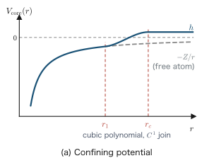
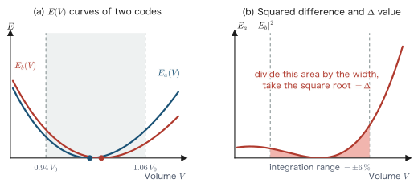

Chapter 14Numerical Solution of the Kohn–Sham Equations
In Parts I through IV we learned the principles of density functional theory (the Hohenberg–Kohn theorems, the Kohn–Sham equations, and exchange-correlation functionals) and the electronic structure of periodic systems (Bloch's theorem in Chapter 12, and the density of states and Green's functions in Chapter 13). The theoretical tools are now in place. However, only very few systems admit analytical solutions of the Kohn–Sham (KS) equations, so to apply them to real molecules and solids we have no choice but to solve them numerically on a computer. In Part V, which begins with this chapter, we follow “how” the KS equations are actually solved inside a computer, breaking the process down into the choice of basis functions, the assembly of matrices, the numerical evaluation of the total energy, and the acceleration of convergence of the self-consistent field (SCF) iteration. In the second half of the chapter, we make concrete, down to the level of a blueprint, a radial-equation solver with which you can solve the KS equations of a spherically symmetric atom by yourself. The atomic calculation is also the starting point of the pseudopotential construction that we study in Chapter 15.
System of units: Unless otherwise stated, this chapter uses Hartree atomic units ($\hbar=m_e=e=4\pi\varepsilon_0=1$). The unit of energy is the hartree (1 Ha $=27.2114$ eV), and the unit of length is the bohr (1 bohr $=0.529177$ Å).
- Formulate the KS equations plus the SCF loop as a “nonlinear eigenvalue problem” and grasp the flow of the whole calculation
- Derive the generalized eigenvalue problem $HC=SC\varepsilon$ from the variational principle without skipping a single line, and compare the strengths and weaknesses of plane waves, localized basis functions, and real-space grids
- Verify, through identity transformations, the rearrangement of the Coulomb terms of the total energy (the neutral-atom decomposition), which is the crux of localized-basis implementations
- Linearize the SCF iteration to find the convergence condition of simple mixing, and derive the origin of charge sloshing, Kerker mixing, and Pulay (DIIS) mixing
- Separate the variables in the KS equations of a spherically symmetric atom, and obtain the overall picture of a “home-made atomic DFT solver” that solves them with a logarithmic mesh and the shooting method
- Learn the idea of the Δ-gauge, a quantitative measure of reproducibility between codes
14.1 What Are We Computing? — The KS Equations as a Nonlinear Eigenvalue Problem
First, let us determine precisely the structure of the problem that we are about to solve numerically. The KS equations are
\begin{equation} \left[-\frac{1}{2}\nabla^{2}+v_{\mathrm{eff}}[n](\rr)\right]\varphi_{i}(\rr) =\varepsilon_{i}\,\varphi_{i}(\rr) \label{eq:14-ks} \end{equation}and the effective potential is given as a functional of the electron density $n(\rr)$ by
\begin{equation} v_{\mathrm{eff}}[n](\rr) = v_{\mathrm{ext}}(\rr) + \underbrace{\int \dd^3 r'\,\frac{n(\rr')}{\abs{\rr-\rr'}}}_{\displaystyle v_{\mathrm{H}}[n](\rr)} +\, v_{xc}[n](\rr) \label{eq:14-veff} \end{equation}Here $v_{\mathrm{ext}}$ is the external field due to the nuclei (or to the pseudopotentials introduced in Chapter 15), $v_{\mathrm{H}}$ is the Hartree potential, and $v_{xc}=\delta E_{xc}/\delta n$ is the exchange-correlation potential (the functional derivative is treated in Chapter 4). The density is built from the orbitals using the occupation numbers $f_i$ as
\begin{equation} n(\rr)=\sum_{i} f_i\,\abs{\varphi_i(\rr)}^{2}, \qquad \sum_i f_i = N_{\mathrm{e}} \label{eq:14-dens} \end{equation}(In a spin-polarized system there is a separate $n_\sigma$ for each spin $\sigma=\uparrow,\downarrow$, but in this chapter we write the equations with the spin sum suppressed, for notational simplicity.)
Looking at Eqs. \eqref{eq:14-ks}–\eqref{eq:14-dens} together, we see what is special about this problem: the Hamiltonian depends on the eigenfunctions themselves. To construct $v_{\mathrm{eff}}$ we need $n$, to construct $n$ we need $\varphi_i$, and to find $\varphi_i$ we need $v_{\mathrm{eff}}$. That is, the KS equations form a nonlinear eigenvalue problem, and it cannot be solved by calling an eigenvalue solver of linear algebra once. The standard solution method is to break this circularity by iteration. We assume an input density $n_{\mathrm{in}}$, construct $v_{\mathrm{eff}}[n_{\mathrm{in}}]$, solve the eigenvalue problem as a linear problem (only for the duration of that iteration), and construct an output density $n_{\mathrm{out}}$ from the resulting orbitals. Writing this sequence of operations as the map
\begin{equation} n_{\mathrm{out}} = F[n_{\mathrm{in}}] \label{eq:14-fixmap-intro} \end{equation}the self-consistent solution we seek is the fixed point $n^{*}=F[n^{*}]$. The procedure of iterating until $n_{\mathrm{in}}$ and $n_{\mathrm{out}}$ agree (within a tolerance) is the self-consistent field (SCF) loop. How to iterate so as to reach the fixed point quickly and stably is itself a theoretical problem, which we analyze in detail in Section 14.5.
14.1.1 Three axes of design
The flow in Figure 14.1 is common to every DFT code, but there is considerable freedom of design in how each step is realized. The individuality of practical codes can be classified roughly along the following three axes.
(i) Treatment of core electrons. There are all-electron methods, which treat all electrons explicitly, and pseudopotential methods, which replace the chemically inert core electrons, together with the nucleus, by an effective potential and solve only for the valence electrons. The theory and construction of pseudopotentials are treated in detail in Chapter 15. In this chapter we use only the fact that the local part of the external field, $v_{\mathrm{core},I}(\rr)$, behaves as $-Z_I/r$ at large distances ($Z_I$ is the nuclear charge in an all-electron method and the number of valence electrons in a pseudopotential method).
(ii) Choice of basis functions (discretization). This is the method of representing the wave function by a finite number of quantities. Plane waves, localized functions resembling atomic orbitals, and real-space grids are the three major schools, and in Section 14.2 we formulate them in a unified way from the variational principle and compare them.
(iii) Solution algorithm. This covers how to solve the eigenvalue problem (direct or iterative diagonalization), how to solve the Poisson equation, the acceleration of SCF convergence (charge mixing), and so on. In this chapter we dig particularly deep into SCF convergence (Section 14.5).
| Method | Core electrons | Basis | Example codes | Features |
|---|---|---|---|---|
| All-electron, mixed basis ((L)APW+lo, etc.) | All treated | Plane waves in the interstitial region, numerical radial functions inside the atomic spheres | WIEN2k, FLEUR, ELK | Gives the highest-accuracy reference values. Core levels can also be computed. The cost is large |
| Pseudopotential, plane waves | Valence only | Plane waves | VASP, Quantum ESPRESSO | Systematic convergence with a single parameter, the cutoff. Suited to periodic systems. Easy to use |
| Pseudopotential, localized basis | Valence only | Localized functions resembling atomic orbitals | OpenMX, SIESTA, CP2K | Small basis, sparse matrices, compatible with $O(N)$ methods. Designing the basis requires experience |
| Real-space grid | Mainly valence | Finite-difference grid (no basis functions used) | Octopus, GPAW (FD) | Systematic convergence with the grid spacing. Suited to large-scale parallelization |
Physical Meaning
“Choosing a basis” means choosing “the subspace of Hilbert space within which to carry out the variation.” As we show in Section 14.2, every finite-basis KS calculation is a Rayleigh–Ritz variational calculation, and as the basis is enlarged the total energy (for the same Hamiltonian) approaches the true value monotonically. The strength of plane waves is that this convergence can be controlled by a single parameter (the cutoff energy); the strength of a localized basis is that a small number of functions can span a chemically meaningful subspace. The question is not which one is “correct” but which subspace is efficient for which physical system—an engineering choice.
14.1.2 Overview of the computational cost
Let $M$ be the number of basis functions and $N$ the number of electrons (or atoms). The cost of each step in Figure 14.1 is then roughly as follows. Assembling the matrix elements costs $O(M\log M)$ for plane waves, where the FFT is used, and only $O(N)$ for a localized basis, because the matrices are sparse. Direct diagonalization of the eigenvalue problem, on the other hand, costs $O(M^{3})$, and this becomes the rate-limiting step as the system grows. Plane waves require $10^{2}$–$10^{3}$ basis functions per atom, whereas a well-designed localized basis needs only $10$–$50$ per atom. This difference is why localized-basis implementations are preferred for large systems and electron-transport calculations. Moreover, a localized basis opens the way to $O(N)$ methods that exploit the sparsity of the Hamiltonian (not treated in this book, but the basis design of Section 14.3 is their foundation).
Once the SCF cycle has converged, we compute the total energy $E_{\mathrm{tot}}$ (Section 14.4) and the force on each atom, $\bm{F}_I=-\partial E_{\mathrm{tot}}/\partial\bm{\tau}_I$. Note that when the basis functions are attached to the atomic positions (a localized basis), the force calculation requires, in addition to the Hellmann–Feynman term, a correction arising from the motion of the basis (the Pulay force).
14.2 Basis Expansion and the Generalized Eigenvalue Problem
In this section we reduce the KS equation, Eq. \eqref{eq:14-ks}, to the problem of “determining a finite set of numbers.” The strategy is clear. Expand the wave function in a finite number of basis functions and impose the variational principle (the stationarity condition of the Rayleigh quotient); this yields a matrix equation for the expansion coefficients—the generalized eigenvalue problem. This is the heart of every basis-set DFT code.
14.2.1 Finite basis expansion
Prepare $M$ mutually linearly independent basis functions $\{\chi_\mu(\rr)\}_{\mu=1}^{M}$ and expand the KS orbitals as follows:
\begin{equation} \varphi_i(\rr)=\sum_{\mu=1}^{M} c_{\mu i}\,\chi_\mu(\rr) \label{eq:14-expand} \end{equation}In general the basis need not be orthogonal (localized atomic orbitals overlap one another). Here we define two $M\times M$ matrices, the Hamiltonian matrix $H$ and the overlap matrix $S$:
\begin{equation} H_{\mu\nu}=\int \dd^3 r\,\chi_\mu^{*}(\rr)\,\hat{h}_{\mathrm{KS}}\,\chi_\nu(\rr), \qquad S_{\mu\nu}=\int \dd^3 r\,\chi_\mu^{*}(\rr)\,\chi_\nu(\rr), \label{eq:14-hs-def} \end{equation}where $\hat{h}_{\mathrm{KS}}=-\frac{1}{2}\nabla^2+v_{\mathrm{eff}}$. Since $\hat{h}_{\mathrm{KS}}$ is Hermitian, $H_{\mu\nu}=H_{\nu\mu}^{*}$; and it is obvious from the definition that $S_{\mu\nu}=S_{\nu\mu}^{*}$, so both $H$ and $S$ are Hermitian matrices.
Let us express the energy expectation value and the norm of a single orbital $\varphi$ (we suppress the index $i$ for the moment) in terms of the coefficients by substituting the expansion \eqref{eq:14-expand}. Interchanging the order of integration and summation (always allowed, since the sum is finite), we obtain
\begin{align} \braket{\varphi|\hat{h}_{\mathrm{KS}}|\varphi} &=\int \dd^3 r\,\Big(\sum_\mu c_{\mu}\chi_\mu(\rr)\Big)^{*}\hat{h}_{\mathrm{KS}}\Big(\sum_\nu c_{\nu}\chi_\nu(\rr)\Big) \label{eq:14-exp-h-1}\\ &=\sum_{\mu\nu} c_{\mu}^{*}c_{\nu}\int \dd^3 r\,\chi_\mu^{*}(\rr)\,\hat{h}_{\mathrm{KS}}\,\chi_\nu(\rr) \label{eq:14-exp-h-2}\\ &=\sum_{\mu\nu} c_{\mu}^{*}\,H_{\mu\nu}\,c_{\nu} =\bm{c}^{\dagger}H\bm{c}. \label{eq:14-exp-h} \end{align}From the first line to the second, we distributed the complex conjugate over each term (using the fact that $\hat{h}_{\mathrm{KS}}$ is a linear operator that does not act on the coefficients) and moved the double sum outside the integral. The third line is just the substitution of the definition \eqref{eq:14-hs-def}. By exactly the same procedure we obtain:
\begin{equation} \braket{\varphi|\varphi}=\sum_{\mu\nu}c_\mu^{*}S_{\mu\nu}c_\nu=\bm{c}^{\dagger}S\bm{c} \label{eq:14-exp-s} \end{equation}Here $\bm{c}=(c_1,\dots,c_M)^{\mathrm T}$ is the column vector of the coefficients.
14.2.2 From the stationarity of the Rayleigh quotient to $H\bm{c}=\varepsilon S\bm{c}$
By the variational principle, the $\varphi$ that makes $\braket{\varphi|\hat{h}_{\mathrm{KS}}|\varphi}$ stationary under the normalization condition $\braket{\varphi|\varphi}=1$ is an eigenstate. Since this is a stationarity problem with a constraint, we introduce a Lagrange multiplier $\varepsilon$ and write
\begin{equation} L(\bm{c},\bm{c}^{*},\varepsilon) =\bm{c}^{\dagger}H\bm{c} -\varepsilon\left(\bm{c}^{\dagger}S\bm{c}-1\right) =\sum_{\mu\nu}c_\mu^{*}H_{\mu\nu}c_\nu -\varepsilon\Big(\sum_{\mu\nu}c_\mu^{*}S_{\mu\nu}c_\nu-1\Big) \label{eq:14-lagrangian} \end{equation}and make it stationary with respect to the coefficients. The reason for using the undetermined multiplier $\varepsilon$ is to replace a variation restricted to directions that satisfy the constraint (the normalization) by an unconstrained variation (the same logic as the method of Lagrange multipliers in Chapter 4). Since the coefficients are complex numbers, we first check how to handle the differentiation in a Math Note.
Math Note: Differentiation with respect to complex coefficients (why $c$ and $c^{*}$ may be treated as independent)
The stationarity condition for a real-valued function $f(a,b)$ of a complex variable $c=a+ib$ ($a,b$ real) is $\partial f/\partial a=0$ and $\partial f/\partial b=0$. Here we define the formal differential operators
$$ \frac{\partial}{\partial c}\equiv\frac{1}{2}\left(\frac{\partial}{\partial a}-i\frac{\partial}{\partial b}\right), \qquad \frac{\partial}{\partial c^{*}}\equiv\frac{1}{2}\left(\frac{\partial}{\partial a}+i\frac{\partial}{\partial b}\right) $$(Wirtinger derivatives). With this definition, for $c=a+ib$ and $c^{*}=a-ib$ we have:
$$ \frac{\partial c}{\partial c^{*}}=\frac{1}{2}\left(\frac{\partial}{\partial a}+i\frac{\partial}{\partial b}\right)(a+ib) =\frac{1}{2}(1+i\cdot i)=\frac{1}{2}(1-1)=0, \qquad \frac{\partial c^{*}}{\partial c^{*}}=\frac{1}{2}(1-i\cdot i)=1 $$That is, under this differentiation rule, $c$ and $c^{*}$ behave as if they were mutually independent variables. Moreover, the simultaneous vanishing of $\partial f/\partial a$ and $\partial f/\partial b$ is equivalent to $\partial f/\partial c^{*}=0$ (one complex equation = two real equations). Therefore “differentiating with respect to $c^{*}$ and setting the result to zero” is completely equivalent to making the function stationary with respect to the real and imaginary parts separately, and the calculation becomes overwhelmingly simpler.
Now differentiate Eq. \eqref{eq:14-lagrangian} with respect to $c_\kappa^{*}$. The first term gives
\begin{align} \frac{\partial}{\partial c_\kappa^{*}}\sum_{\mu\nu}c_\mu^{*}H_{\mu\nu}c_\nu &=\sum_{\mu\nu}\frac{\partial c_\mu^{*}}{\partial c_\kappa^{*}}H_{\mu\nu}c_\nu =\sum_{\mu\nu}\delta_{\mu\kappa}H_{\mu\nu}c_\nu =\sum_{\nu}H_{\kappa\nu}c_\nu. \label{eq:14-dterm1} \end{align}Here, by the rule in the Math Note, $c_\nu$ is independent of $c_\kappa^{*}$ and is therefore not affected by the differentiation, so only $\partial c_\mu^{*}/\partial c_\kappa^{*}=\delta_{\mu\kappa}$ survives. The second term has the same structure, so
\begin{equation} \frac{\partial}{\partial c_\kappa^{*}}\left[\varepsilon\Big(\sum_{\mu\nu}c_\mu^{*}S_{\mu\nu}c_\nu-1\Big)\right] =\varepsilon\sum_{\nu}S_{\kappa\nu}c_\nu. \label{eq:14-dterm2} \end{equation}The stationarity condition $\partial L/\partial c_\kappa^{*}=0$ ($\kappa=1,\dots,M$) is obtained by subtracting Eq. \eqref{eq:14-dterm2} from Eq. \eqref{eq:14-dterm1} and setting the result to zero:
\begin{equation} \sum_{\nu}H_{\kappa\nu}c_\nu=\varepsilon\sum_{\nu}S_{\kappa\nu}c_\nu \qquad(\kappa=1,\dots,M) \label{eq:14-stationary} \end{equation}(differentiation with respect to $c_\kappa$ merely gives the Hermitian conjugate of this equation and yields no new condition, because $H$ and $S$ are Hermitian). Collecting this in vector and matrix notation and restoring the orbital index $i$, we obtain
Here $C$ is the $M\times M$ matrix whose columns are the eigenvectors $\bm{c}_i$. The only difference from an ordinary eigenvalue problem is that the overlap matrix $S$ is not the identity matrix, and this is called the generalized eigenvalue problem. Here is what we have obtained: numerically solving the KS equations means solving the generalized eigenvalue problem \eqref{eq:14-gevp} at each SCF iteration.
Caution: Do not confuse the two kinds of $S$
In the ultrasoft pseudopotentials and the PAW method of Chapter 15, a generalized eigenvalue problem that is formally the same, $\hat H\left|\phi\right\rangle=\varepsilon\,\hat S\left|\phi\right\rangle$, also appears (Section 15.7.2). However, the two $S$'s have completely different origins. The $S_{\mu\nu}=\braket{\chi_\mu|\chi_\nu}$ of this section comes solely from the basis not being orthogonal, and it reduces to $S=I$ for a plane-wave basis. The ultrasoft $\hat S=1+\sum_{ij}q_{ij}\left|\beta_i\right\rangle\left\langle\beta_j\right|$, on the other hand, is a deformation of the metric introduced by the pseudo-transformation itself, which gives up norm conservation, and it remains $\hat S\neq1$ even if a completely orthogonal basis such as plane waves is used. The two are independent effects, so if a nonorthogonal localized basis is combined with ultrasoft pseudopotentials, one deals with an $S$ in which the two are superposed. In the rest of this chapter, $S$ always means the former (the overlap matrix).
Let us also check the meaning of the undetermined multiplier $\varepsilon$. Multiplying both sides of \eqref{eq:14-stationary} by $c_\kappa^{*}$ and summing over $\kappa$, we obtain:
\begin{align} \sum_{\kappa\nu}c_\kappa^{*}H_{\kappa\nu}c_\nu &=\varepsilon\sum_{\kappa\nu}c_\kappa^{*}S_{\kappa\nu}c_\nu &&\text{(apply $\textstyle\sum_\kappa c_\kappa^{*}$ to both sides)}\nonumber\\ \Longrightarrow\quad \varepsilon&=\frac{\bm{c}^{\dagger}H\bm{c}}{\bm{c}^{\dagger}S\bm{c}} =\frac{\braket{\varphi|\hat{h}_{\mathrm{KS}}|\varphi}}{\braket{\varphi|\varphi}} \label{eq:14-rayleigh-val} \end{align}To get to the second line, we divided by $\bm{c}^{\dagger}S\bm{c}\neq 0$ ($S$ is positive definite, as we show later) and used Eqs. \eqref{eq:14-exp-h} and \eqref{eq:14-exp-s}. That is, the undetermined multiplier is the Rayleigh quotient of the orbital itself—in other words, the KS orbital energy.
We also derive the orthogonality of solutions belonging to different eigenvalues. Write Eq. \eqref{eq:14-gevp} for the state $i$ and multiply by $\bm{c}_j^{\dagger}$ from the left:
\begin{align} \bm{c}_j^{\dagger}H\bm{c}_i&=\varepsilon_i\,\bm{c}_j^{\dagger}S\bm{c}_i. \label{eq:14-orth1} \end{align}Next, take the Hermitian conjugate of the equation $H\bm{c}_j=\varepsilon_j S\bm{c}_j$ for the state $j$. Using $H^{\dagger}=H$, $S^{\dagger}=S$, and the fact that $\varepsilon_j$ is real (because by \eqref{eq:14-rayleigh-val} it is a quotient of expectation values of Hermitian matrices), we obtain $\bm{c}_j^{\dagger}H=\varepsilon_j\bm{c}_j^{\dagger}S$; acting with this on $\bm{c}_i$ from the right gives
\begin{align} \bm{c}_j^{\dagger}H\bm{c}_i&=\varepsilon_j\,\bm{c}_j^{\dagger}S\bm{c}_i. \label{eq:14-orth2} \end{align}Subtracting Eq. \eqref{eq:14-orth2} from Eq. \eqref{eq:14-orth1} side by side, we obtain
\begin{equation} 0=(\varepsilon_i-\varepsilon_j)\,\bm{c}_j^{\dagger}S\bm{c}_i \quad\Longrightarrow\quad \bm{c}_j^{\dagger}S\bm{c}_i=0\quad(\varepsilon_i\neq\varepsilon_j). \label{eq:14-sorth} \end{equation}That is, the eigenvectors are orthogonal with respect to the inner product whose metric is $S$. This is nothing other than $\braket{\varphi_j|\varphi_i}=\bm{c}_j^{\dagger}S\bm{c}_i=0$, that is, the orthogonality of the orbitals themselves.
Theorem: The variational property of Rayleigh–Ritz and the monotonicity under basis enlargement
(1) The lowest eigenvalue $\varepsilon_1^{(M)}$ of the generalized eigenvalue problem \eqref{eq:14-gevp} is an upper bound for the true lowest eigenvalue $\varepsilon_1$: $\varepsilon_1^{(M)}\ge\varepsilon_1$. This follows immediately from the fact that restricting the Rayleigh quotient to a subspace makes its minimum value greater than or equal to the true minimum.
(2) Furthermore, when one basis function is added, $M\to M+1$, each eigenvalue either decreases monotonically or stays unchanged: $\varepsilon_k^{(M+1)}\le\varepsilon_k^{(M)}$ ($k=1,\dots,M$). This “bracketing of eigenvalues in nested subspaces” is known as the Hylleraas–Undheim–MacDonald theorem (we defer the proof to the reference [MacDonald 1933]). Its practical implication is important: for the same Hamiltonian, the more the basis is enlarged, the more the eigenvalues and the total energy systematically improve. This theorem guarantees the legitimacy of the convergence test of “enlarging the basis until the result no longer changes.”
14.2.3 Properties of the overlap matrix and conversion to a standard eigenvalue problem
The most important property of $S$ is its positive definiteness. For any coefficient vector $\bm{c}\neq\bm{0}$,
\begin{equation} \bm{c}^{\dagger}S\bm{c} =\sum_{\mu\nu}c_\mu^{*}S_{\mu\nu}c_\nu =\int \dd^3 r\,\Big|\sum_\mu c_\mu\chi_\mu(\rr)\Big|^{2} =\int \dd^3 r\,\abs{\varphi(\rr)}^{2}\ \ge 0, \label{eq:14-spos} \end{equation}where the second equality uses the derivation of Eq. \eqref{eq:14-exp-s} as it stands, and equality holds only when $\varphi(\rr)=0$ (almost everywhere). If the basis is linearly independent, there is no nontrivial $\bm{c}$ with $\varphi=0$, so $\bm{c}^{\dagger}S\bm{c}\gt 0$; that is, $S$ is positive definite and invertible.
Using positive definiteness, Eq. \eqref{eq:14-gevp} can be converted to standard form. Since $S$ is Hermitian, it can be diagonalized by a unitary matrix $U$, and we can write $S=U\,\mathrm{diag}(s_1,\dots,s_M)\,U^{\dagger}$ with $s_\mu\gt0$. We therefore define
\begin{equation} S^{-1/2}\equiv U\,\mathrm{diag}(s_1^{-1/2},\dots,s_M^{-1/2})\,U^{\dagger} \label{eq:14-shalf-def} \end{equation}(Löwdin orthogonalization). Let us check that $S^{-1/2}SS^{-1/2}=U\,\mathrm{diag}(s^{-1/2}s\,s^{-1/2})\,U^{\dagger}=UU^{\dagger}=1$ (the product of diagonal matrices is the componentwise product, and we used $U^{\dagger}U=1$ twice). Introducing the new variable $\bm{d}_i\equiv S^{1/2}\bm{c}_i$ and multiplying Eq. \eqref{eq:14-gevp} by $S^{-1/2}$ from the left, we obtain
\begin{align} S^{-1/2}H\bm{c}_i&=\varepsilon_i\,S^{-1/2}S\bm{c}_i &&\text{(multiply by $S^{-1/2}$ from the left)}\nonumber\\ S^{-1/2}H\underbrace{S^{-1/2}S^{1/2}}_{=1}\bm{c}_i&=\varepsilon_i\,S^{-1/2}S\underbrace{S^{-1/2}S^{1/2}}_{=1}\bm{c}_i &&\text{(insert the identity $S^{-1/2}S^{1/2}=1$)}\nonumber\\ \big(S^{-1/2}HS^{-1/2}\big)\,\bm{d}_i&=\varepsilon_i\,\big(S^{-1/2}SS^{-1/2}\big)\,\bm{d}_i=\varepsilon_i\,\bm{d}_i \label{eq:14-loewdin-transform} \end{align}Since $\tilde{H}\equiv S^{-1/2}HS^{-1/2}$ is Hermitian ($\tilde H^\dagger = S^{-1/2}H^\dagger S^{-1/2}=\tilde H$, where we used the fact that $S^{-1/2}$ is Hermitian), an ordinary Hermitian eigenvalue solver can be used as it is. In implementations, an equivalent transformation using the Cholesky decomposition $S=LL^{\dagger}$ is the mainstream choice.
Physical Meaning: The condition number of $S$ and “overextending the basis”
The factors $s_\mu^{-1/2}$ appear in Eq. \eqref{eq:14-loewdin-transform}. If the basis is nearly linearly dependent (for example, when localized functions with long tails are packed densely), the smallest eigenvalue $s_{\min}$ of $S$ becomes a tiny value such as $10^{-8}$, and $s_{\min}^{-1/2}\sim10^{4}$ amplifies numerical errors. This is the implementation-level reason why “the more basis functions, the better” does not necessarily hold. Localized-basis codes often have a built-in procedure that discards the components for which $s_\mu$ is below a threshold (truncating the subspace). When a calculation becomes unstable after the basis cutoff radius has been stretched too far, this overcompleteness is usually the cause.
14.2.4 Periodic systems: Bloch sums and a per-$\kk$-point eigenvalue problem
In a crystal, following Bloch's theorem of Chapter 12, we construct from the localized basis $\chi_\mu(\rr-\bm{\tau}_\mu)$ the Bloch sum
\begin{equation} \chi_{\mu}^{(\kk)}(\rr)=\frac{1}{\sqrt{N_{\mathrm{cell}}}}\sum_{\bm{R}}e^{i\kk\cdot\bm{R}}\,\chi_\mu(\rr-\bm{\tau}_\mu-\bm{R}) \label{eq:14-bloch-sum} \end{equation}and expand in it ($\bm{R}$ is a lattice vector). Because the Hamiltonian commutes with lattice translations, different $\kk$ do not mix, and the eigenvalue problem is block-diagonalized for each $\kk$ point:
\begin{equation} H(\kk)\,C(\kk)=S(\kk)\,C(\kk)\,\mathrm{diag}\big(\varepsilon_1(\kk),\dots\big). \label{eq:14-gevp-k} \end{equation}The dimension of the matrices is “the number of basis functions in the unit cell,” so even if the crystal is infinitely large, the eigenvalue problem remains finite-dimensional. This is the computational benefit of Bloch's theorem. Below, for notational simplicity, we write the equations in this chapter without the $\kk$ dependence, but every equation holds at each $\kk$ point.
14.2.5 The three major families of basis functions
The formulation so far does not depend on how the basis is chosen. What, then, do we actually choose for $\chi_\mu$? Figure 14.2 shows the three major families.
(a) Plane-wave basis. In a periodic cell of volume $V$, take the normalized plane waves $\chi_{\bm{G}}(\rr)=V^{-1/2}e^{i(\kk+\bm{G})\cdot\rr}$ ($\bm{G}$ is a reciprocal lattice vector) as the basis. By the orthogonality of plane waves, $S_{\bm{G}\bm{G}'}=\delta_{\bm{G}\bm{G}'}$; that is, the overlap matrix is the identity matrix, and Eq. \eqref{eq:14-gevp} is a standard eigenvalue problem from the start. The size of the basis is controlled by a single parameter, the cutoff energy $E_{\mathrm{cut}}$:
\begin{equation} \frac{1}{2}\abs{\kk+\bm{G}}^{2}\le E_{\mathrm{cut}}. \label{eq:14-pw-cutoff} \end{equation}Let us estimate the number of plane waves used. The reciprocal lattice points are distributed in reciprocal space with density $V/(2\pi)^{3}$ (the same way of counting as the number of states in the Fermi sphere in Chapter 3). The number of points inside a sphere of radius $q_c=\sqrt{2E_{\mathrm{cut}}}$ is
\begin{equation} N_{\mathrm{PW}}\simeq\frac{4}{3}\pi q_c^{3}\times\frac{V}{(2\pi)^{3}} =\frac{V\,(2E_{\mathrm{cut}})^{3/2}}{6\pi^{2}} \label{eq:14-pw-count} \end{equation}Raising $E_{\mathrm{cut}}$ makes the result converge systematically to the exact solution (part (2) of the preceding theorem). This is the greatest virtue of plane waves. The weakness is that, when the wave function oscillates sharply near the nucleus (the $3d$ of transition metals, the $2p$ of oxygen, and so on), $E_{\mathrm{cut}}$ becomes enormous, and “softening” by pseudopotentials (Chapter 15) becomes practically indispensable. Moreover, because the basis is spread uniformly over vacuum regions as well, plane waves are wasteful for isolated molecules and surfaces.
Example: Number of plane waves for a silicon crystal
The conventional lattice constant of the Si diamond structure is $a=5.431$ Å $=10.26$ bohr, and the volume of the fcc unit cell (two atoms) is $V=a^{3}/4=270$ bohr$^{3}$. For a standard cutoff $E_{\mathrm{cut}}=12.5$ Ha (25 Ry), $q_c=\sqrt{2\times12.5}=5.0$ bohr$^{-1}$, and from Eq. \eqref{eq:14-pw-count} $$N_{\mathrm{PW}}\simeq\frac{270\times125}{6\pi^{2}}\approx570$$ that is, about 285 plane waves per atom are used. By contrast, with the localized basis described below, the same valence band can be described with a dozen or so functions per atom. However, whereas $N_{\mathrm{PW}}$ for plane waves moves systematically toward the exact solution simply by raising $E_{\mathrm{cut}}$, improving a localized basis requires designing the functional forms. This contrast characterizes the two families well.
(b) Localized basis (LCAO/LCPAO). The wave function is expanded in linear combinations of atomic-orbital-like functions $\chi_{I\alpha}(\rr-\bm{\tau}_I)$ centered at the position $\bm{\tau}_I$ of atom $I$ (the angular momentum $lm$ and the radial degree of freedom are collectively written $\alpha$). The Gaussian basis sets and Slater basis sets of quantum chemistry, and numerical atomic orbitals (pseudo-atomic orbitals, LCPAO), which use tabulated radial functions, belong to this family. Its advantages are: (i) an overwhelmingly small number of basis functions, 10–50 per atom; (ii) if a finite cutoff radius is imposed, $H$ and $S$ become sparse matrices, which is consistent with large systems, $O(N)$ methods, and nonequilibrium Green's function transport calculations; and (iii) the coefficients $c_{\mu i}$ directly give a chemical interpretation (which orbital of which atom contributes). Its drawbacks are that there is no single parameter for systematic convergence, and the following BSSE.
Math Note: Basis set superposition error (BSSE)
In a localized basis, because the basis is attached to the atoms, the variational space itself changes when the shape of the system changes. Consider estimating the binding energy of two molecules A and B by $\Delta E=E_{AB}-E_A-E_B$. In the calculation of the dimer AB, the electrons of A can improve their own wave function by borrowing the basis functions of B “as well” (and vice versa). In the monomer calculations, this borrowing is not possible. Therefore only the dimer gains an extra variational advantage, and $\Delta E$ is shifted in the direction of overestimating the binding. This is the basis set superposition error (BSSE). The standard correction is the counterpoise method [Boys–Bernardi 1970]: monomer A is recalculated together with “a ghost atom with the basis only placed at the position of B (no nucleus and no electrons),” and the difference is taken between calculations in the same variational space. BSSE is an error that vanishes as the basis approaches a complete set, and it does not exist for the plane-wave basis (which is spread uniformly over space).
(c) Real-space grid. The wave function is represented by its values $\varphi(\rr_p)$ at lattice points, and the Laplacian is approximated by finite differences, for example, at second-order accuracy,
\begin{equation} \frac{\dd^2\varphi}{\dd x^2}\bigg|_{x_p}\approx\frac{\varphi(x_{p+1})-2\varphi(x_p)+\varphi(x_{p-1})}{h^{2}} \label{eq:14-fd} \end{equation}(in practice, wide stencils of sixth to eighth order are used). Reducing the grid spacing $h$ gives systematic convergence, and since communication is local, the method is well suited to massively parallel computers. One must beware of the “eggbox error,” in which the energy undulates slightly depending on where the atoms sit relative to the grid points. Incidentally, the plane-wave method also uses a real-space grid internally together with the FFT, so the two are relatives.
| Plane waves | Localized basis (LCAO/LCPAO) | Real-space grid | |
|---|---|---|---|
| Convergence control | Systematic with the single parameter $E_{\mathrm{cut}}$ | Number of basis functions and cutoff radius (design needed) | Systematic in grid spacing $h$ |
| Basis functions per atom | $10^{2}$–$10^{3}$ | $10$–$50$ | Grid points $10^{3}$–$10^{4}$ |
| $S$ matrix | Identity matrix | Off-diagonal (positive definite) | (Nearly) identity matrix |
| Matrix sparsity | Dense (but the action is fast with the FFT) | Sparse (cutoff radius) | Sparse (finite-difference stencil) |
| BSSE | None | Present (counterpoise correction) | None |
| Best-suited systems | Periodic crystals, metals | Large systems, molecules, transport, $O(N)$ | Isolated systems, massive parallelism |
| Force calculation | Hellmann–Feynman only | Pulay correction required | Beware of the eggbox error |
With this, “into what kind of matrix equation the KS equations are cast” has been settled. In the next section, we look in detail at the design of the localized basis among the three families, in particular the numerical pseudo-atomic orbitals (LCPAO), because it is packed with devices for achieving high accuracy with a small number of functions.
14.3 Choice of Basis Functions — Designing Pseudo-Atomic Orbitals (LCPAO)
In the previous section we listed the characters of the three schools in Table 14.2. From the standpoint of designing a code, however, what really matters is a quantitative question: how do the cost of building the matrices and the cost of multiplying by them depend on the system size $N$? In this section we first check this point with concrete numbers (14.3.1). We then make concrete how to construct and how to optimize a basis of numerical pseudo-atomic orbitals (LCPAO), from the necessity of a confining potential to the gradient formulas of the variational optimization (14.3.2–14.3.4). The ideas that achieve high accuracy with a small number of functions are concentrated here.
14.3.1 Comparing the costs of the three schools numerically
(a) Plane waves: multiply by the matrix without building it. In a plane-wave basis the matrix elements of \eqref{eq:14-hs-def} can be written analytically. By the orthogonality of plane waves the kinetic-energy term is diagonal, and the local-potential term becomes its Fourier component:
\begin{equation} H_{\bm{G}'\bm{G}}=\frac{1}{2}\abs{\kk+\bm{G}}^{2}\,\delta_{\bm{G}'\bm{G}} +\tilde v_{\mathrm{eff}}(\bm{G}'-\bm{G}), \qquad \tilde v_{\mathrm{eff}}(\bm{G})\equiv\frac{1}{\Omega}\int_{\Omega}\dd^3 r\,v_{\mathrm{eff}}(\rr)\,e^{-i\bm{G}\cdot\rr} \label{eq:14-pw-hmat} \end{equation}(here $\Omega$ is the volume of the unit cell). This matrix, however, is dense. For $N_{\mathrm{PW}}=10^{5}$ the number of elements is $10^{10}$, which in double-precision complex numbers amounts to $160$ GB, so it cannot even be stored. Therefore the plane-wave method does not build the matrix explicitly. All we need is “the result of multiplying a given vector $\bm{c}$ by $H$,” and this can be computed with the FFT. Let us check why. Expand the wave function as
\begin{equation} \psi_{\kk}(\rr)=\frac{1}{\sqrt{\Omega}}\sum_{\bm{G}}c_{\bm{G}}\,e^{i(\kk+\bm{G})\cdot\rr}, \qquad v_{\mathrm{eff}}(\rr)=\sum_{\bm{G}}\tilde v_{\mathrm{eff}}(\bm{G})\,e^{i\bm{G}\cdot\rr} \label{eq:14-pw-expand} \end{equation}and compute the product $v_{\mathrm{eff}}\psi_{\kk}$ in real space:
\begin{align} v_{\mathrm{eff}}(\rr)\,\psi_{\kk}(\rr) &=\frac{1}{\sqrt{\Omega}}\sum_{\bm{G}}\sum_{\bm{G}'}\tilde v_{\mathrm{eff}}(\bm{G}')\,c_{\bm{G}}\,e^{i(\kk+\bm{G}+\bm{G}')\cdot\rr} \label{eq:14-conv-1}\\ &=\frac{1}{\sqrt{\Omega}}\sum_{\bm{G}''}\left[\sum_{\bm{G}}\tilde v_{\mathrm{eff}}(\bm{G}''-\bm{G})\,c_{\bm{G}}\right]e^{i(\kk+\bm{G}'')\cdot\rr} \label{eq:14-conv-2} \end{align}The first line is simply the product of the two sums in \eqref{eq:14-pw-expand}. In the second line the summation variable is changed to $\bm{G}''=\bm{G}+\bm{G}'$ (the set of reciprocal lattice vectors is closed under addition, so letting $\bm{G}'$ run over the set is the same as letting $\bm{G}''$ run over it). The content of the square brackets is exactly the product of the potential term of \eqref{eq:14-pw-hmat} and $\bm{c}$. In other words,
Physical Meaning: Why does the FFT work?
The kinetic energy is diagonal in reciprocal space, and the local potential is diagonal in real space. To compute $H\bm{c}$, carry $\bm{c}$ to real space by an FFT ($O(M\log M)$), multiply by $v_{\mathrm{eff}}(\rr_p)$ at each lattice point ($O(M)$), return to reciprocal space by an FFT ($O(M\log M)$), and add the kinetic-energy term. The $O(M^{2})$ matrix–vector product becomes $O(M\log M)$. If we then use an iterative diagonalization such as the Davidson method or the conjugate-gradient method, we need to find only the $N_{\mathrm{occ}}$ occupied orbitals rather than all $M$ of them, and the total cost drops to $O(N_{\mathrm{occ}}M\log M)$ plus $O(N_{\mathrm{occ}}^{2}M)$ for the orthogonalization. The plane-wave method can handle bases of the order of $10^{5}$ functions thanks to this strategy of not building the matrix.
The coarseness of the FFT grid is also determined. The shortest wavelength that can be represented on a real-space grid of spacing $h$ is $2h$ (two points per period), and the corresponding maximum wavenumber is
\begin{equation} q_{\max}=\frac{2\pi}{2h}=\frac{\pi}{h} \label{eq:14-nyquist} \end{equation}(the Nyquist wavenumber). The wave function has components only up to $\abs{\kk+\bm{G}}\le q_c=\sqrt{2E_{\mathrm{cut}}}$, but the density $n=\abs{\psi}^{2}$ and the potential have components up to $2q_c$ because of the convolution. Therefore, to avoid the folding error (aliasing) we need $q_{\max}\ge 2q_c$, that is,
\begin{equation} h\le\frac{\pi}{2q_c}=\frac{\pi}{2\sqrt{2E_{\mathrm{cut}}}} \label{eq:14-grid-spacing} \end{equation}For $E_{\mathrm{cut}}=12.5$ Ha, $q_c=5.0$ bohr$^{-1}$ and $h\le 0.31$ bohr. For the Si considered earlier (two atoms, $\Omega=270$ bohr$^{3}$), the number of lattice points is $270/0.31^{3}\approx 9\times10^{3}$, about $4\times10^{3}$ points per atom, which agrees with the estimate in Table 14.2.
(b) The weakness of plane waves is that they “spread the basis over the vacuum too.” As \eqref{eq:14-pw-count} shows, $N_{\mathrm{PW}}\propto \Omega$, and plane waves do not know where in the cell the atoms are. If a slab $10$ bohr thick is put in a periodic cell together with a vacuum layer of $20$ bohr, $2/3$ of $\Omega$ is vacuum, and $2/3$ of the plane waves are spent describing “the wave function being zero where there is nothing.” For an isolated molecule this waste is even more severe. Localized basis functions are attached to the atoms, so waste of this kind does not exist in principle.
(c) Localized bases: the cutoff radius produces sparsity. If the basis function $\chi_{I\alpha}$ is identically zero outside a radius $r_c$ from atom $I$, then
\begin{equation} \abs{\bm{\tau}_I-\bm{\tau}_J}\gt r_c^{I}+r_c^{J} \quad\Longrightarrow\quad S_{I\alpha,J\beta}=0,\quad H_{I\alpha,J\beta}=0 \label{eq:14-sparsity} \end{equation}(if the supports of two functions do not overlap, the integral is identically zero. For $H$, the local-potential term vanishes for the same reason, and the nonlocal pseudopotential term does likewise because the support of the projector is finite). The number of nonzero elements per row is “the number of atoms inside a sphere of radius $r_c^{I}+r_c^{J}$ × the number of orbitals per atom,” which is a constant independent of the system size $N$. Hence the storage and the assembly cost of $H$ and $S$ are $O(N)$.
Example: Number of nonzero elements in crystalline Si
From the conventional cubic cell of Si (edge $a=10.26$ bohr, 8 atoms), the number density of atoms is $8/a^{3}=7.4\times10^{-3}$ atoms/bohr$^{3}$. With a basis of cutoff radius $r_c=6.0$ bohr, the matrix elements can be nonzero only for partners with $\abs{\bm{\tau}_I-\bm{\tau}_J}\le 12$ bohr; the volume of that sphere is $\frac{4}{3}\pi(12)^{3}=7.24\times10^{3}$ bohr$^{3}$, and the number of atoms it contains is $$7.24\times10^{3}\times7.4\times10^{-3}\approx 54\ \text{atoms}$$ With 13 orbitals per atom (s2p2d1, described later), this gives $54\times13\approx700$ nonzero elements per row, independent of $N$. For a system of $10^{4}$ atoms ($M=1.3\times10^{5}$), a dense matrix would have $1.7\times10^{10}$ elements (about $270$ GB), whereas a sparse matrix needs only $9\times10^{7}$ elements (about $1.4$ GB), a difference of about a factor of 200. Note, however: even if $H$ and $S$ are sparse, the eigenvectors obtained by diagonalizing \eqref{eq:14-gevp} directly are in general dense, and the cost of direct diagonalization remains $O(M^{3})$. To maintain $O(N)$ scaling to the end, we need a different algorithm that obtains the density matrix directly without going through the eigenvectors. Sparsity is the prerequisite for it.
14.3.2 Why “confine”? — Generating pseudo-atomic orbitals
\eqref{eq:14-sparsity} presupposed that “the basis functions are exactly zero beyond a finite radius.” The orbitals of a free atom, however, are not like that. The radial part of a bound state decays far from the nucleus as
\begin{equation} u_{nl}(r)\ \propto\ e^{-\sqrt{2\abs{\varepsilon_{nl}}}\,r} \qquad(r\to\infty) \label{eq:14-free-tail} \end{equation}that is, exponentially (we derive this asymptotic form from the radial equation in Section 14.6). For a valence level $\varepsilon\simeq-0.5$ Ha the decay length is $1$ bohr, and even at $r=15$ bohr, $e^{-15}\approx3\times10^{-7}$ is not zero. The tail never terminates.
Can we then simply chop the orbitals of the free atom at $r_c$? That is bad in two respects. First, if the function jumps discontinuously at the cutoff point, its second derivative contains the derivative of a delta function, and the kinetic-energy matrix element $\braket{\chi_\mu|-\tfrac{1}{2}\nabla^{2}|\chi_\nu}$ acquires a divergently large error. Second, every time an atom moves and crosses the cutoff surface of its partner, the matrix elements jump, so the total energy ceases to be a continuous function of the atomic coordinates and the forces cannot be defined.
The correct prescription is not to “cut” but to “change the atomic problem so that short-range functions emerge from the start.” That is, when solving the KS equations of the atom, we replace the nuclear potential by the following confining potential and solve:
\begin{equation} V_{\mathrm{core}}(r)= \begin{cases} -\dfrac{Z}{r} & (r\le r_1)\\[4pt] \displaystyle\sum_{n=0}^{3}b_n r^{n} & (r_1\lt r\le r_c)\\[4pt] h & (r_c\lt r) \end{cases} \label{eq:14-confine} \end{equation}The reason for inserting a cubic polynomial follows from counting the matching conditions. Requiring that $V_{\mathrm{core}}$ be continuous at $r_1$ and $r_c$ in both its value and its first derivative gives
\begin{equation} \sum_n b_n r_1^{n}=-\frac{Z}{r_1},\quad \sum_n n\,b_n r_1^{n-1}=\frac{Z}{r_1^{2}},\quad \sum_n b_n r_c^{n}=h,\quad \sum_n n\,b_n r_c^{n-1}=0 \label{eq:14-confine-cond} \end{equation}four linear equations, and since there are exactly four unknowns ($b_0,\dots,b_3$), they are determined uniquely. This counting fixes the degree of the polynomial. The reason for requiring $C^{1}$ continuity is that if the potential has a kink, the third derivative of the wave function jumps, and the accuracy of high-order numerical integration formulas degrades.
What happens when the KS equations of the atom are solved self-consistently inside this well? For $r\gt r_c$ we have $v_{\mathrm{eff}}\approx h$ (constant), so if we neglect the centrifugal term of the radial equation \eqref{eq:14-radial-u} derived in Section 14.6, we obtain
\begin{align} \frac{\dd^{2}u}{\dd r^{2}}&=2\left[h-\varepsilon\right]u \qquad(r\gt r_c) \label{eq:14-confine-decay1}\\ \Longrightarrow\quad u(r)&\propto e^{-\sqrt{2(h-\varepsilon)}\,r} \label{eq:14-confine-decay2} \end{align}The first line is simply \eqref{eq:14-radial-u} with $v_{\mathrm{eff}}\to h$, and the second line takes the decaying solution of a second-order linear ordinary differential equation with constant coefficients (the divergent solution is excluded by the boundary condition $u(\infty)=0$). If we take $h-\varepsilon$ to be a few hartree, the decay length $1/\sqrt{2(h-\varepsilon)}$ becomes $0.5$ bohr or less, and once the radius exceeds $r_c$ by 1–2 bohr the amplitude falls to $10^{-2}$–$10^{-4}$. In the implementation the basis is defined to be exactly zero for $r\gt r_c$, but the error introduced by this truncation is exponentially small, as shown above. Confinement is a device that pushes the numerical requirement of sparsity into the definition of the variational space.

Physical Meaning: $r_c$ and the number of basis functions can be treated as “variational parameters”
If the confinement radius $r_c$ is increased, the basis functions span a wider region of space, so the total energy decreases. When the number of radial functions is increased at the same $r_c$, the functions present before the addition remain unchanged, so the variational space is nested, Theorem (2) of Section 14.2 applies exactly, and the energy decreases monotonically. On the other hand, changing $r_c$ changes the confining potential itself and hence the shapes of the functions, so the subspaces are not nested. Therefore the monotonicity with respect to $r_c$ is not guaranteed by the theorem. Even so, it is known empirically that in practice the energy decreases monotonically as $r_c$ is extended, which makes possible the practice of “regarding $r_c$ and the number of basis functions as two variational parameters and checking convergence.” However, if $r_c$ is extended too far, the ill-conditioning of $S$ described in Section 14.2.3 begins, so there is a trade-off between the energy lowering and the stability.
14.3.3 Multiple-$\zeta$ and polarization orbitals
How many functions should we prepare per atom? The minimal choice is the single-$\zeta$ (SZ) basis, which assigns one radial function to each valence $(n,l)$. However, this cannot express the fact that, when a bond is formed, the charge state of the atom and the spread of its electron cloud differ from those of the free atom. What we need is a degree of freedom that represents “radial expansion and contraction.”
How many functions are needed for this can be seen from the following argument. Consider the Slater-type $1s$ radial function
\begin{equation} R(r;\zeta)=2\zeta^{3/2}e^{-\zeta r} \label{eq:14-slater} \end{equation}and suppose that the exponent $\zeta$ (the “tightness” of the orbital) deviates slightly from $\zeta_0$ depending on the environment. Taylor expansion around $\zeta_0$ gives
\begin{align} R(r;\zeta)&=R(r;\zeta_0)+(\zeta-\zeta_0)\left.\frac{\partial R}{\partial \zeta}\right|_{\zeta_0}+O\!\left((\zeta-\zeta_0)^{2}\right) \label{eq:14-zeta-taylor} \end{align}Carrying out this differentiation with the product rule, we obtain
\begin{align} \frac{\partial R}{\partial \zeta} &=2\cdot\frac{3}{2}\zeta^{1/2}e^{-\zeta r}+2\zeta^{3/2}\cdot(-r)e^{-\zeta r} \label{eq:14-zeta-deriv1}\\ &=\left(\frac{3}{2\zeta}-r\right)R(r;\zeta) \label{eq:14-zeta-deriv2} \end{align}The first line is the result of differentiating $\zeta^{3/2}$ and $e^{-\zeta r}$ in turn, and the second line is obtained by factoring out the common factor $2\zeta^{3/2}e^{-\zeta r}=R$. Here is the key point: $\partial R/\partial\zeta$ is a linear combination of $R$ and $rR$, and $rR$ contains a component orthogonal to $R$ (a function with one node). That is,
Physical Meaning: A double-$\zeta$ basis represents “orbital expansion and contraction” up to first order
If we have only a single function $R(r;\zeta_0)$, changing the coefficient $c$ can only produce an “amplitude scale” $cR(r;\zeta_0)$, and the spread of the orbital stays fixed at that of the free atom. If we add $\partial R/\partial\zeta$ (substantially a function with one node) as a second function, the linear combination $c_1R+c_2\,\partial_\zeta R$ can reproduce the change in $\zeta$ up to first order. This is the variational meaning of the double-$\zeta$ (DZ) basis. In an implementation, we do not use $\partial_\zeta R$ itself; instead, as in Figure 14.3(b), we adopt in turn the eigenfunctions with $0,1,2,\dots$ nodes in the same confining well. Because these are eigenfunctions of a Sturm–Liouville problem, they are mutually orthogonal, which is also advantageous from the viewpoint of the condition number of $S$. Using $N_\zeta$ functions means that we can represent “the change in $\zeta$ up to order $N_\zeta-1$.”
What is also needed is the polarization orbital. We add functions of an angular momentum that is unoccupied in the free atom (such as $d$ for $\mathrm{Si}$ or $p$ for $\mathrm{H}$), and why this is necessary becomes clear from first-order perturbation theory. Suppose that the atom is placed in a nonspherically symmetric environment (the electric field produced by a neighboring atom). Taking the perturbation to be $\hat{V}'=\mathcal{E}z$ due to a uniform electric field $\mathcal{E}$, the first-order correction to the $s$ orbital $\ket{s}$ is
\begin{equation} \ket{\delta s}=\sum_{k\neq s}\frac{\braket{k|\mathcal{E}z|s}}{\varepsilon_s-\varepsilon_k}\ket{k} \label{eq:14-pol-pt} \end{equation}(the standard first-order perturbation theory of quantum mechanics). Here $z=r\cos\theta$, and using spherical harmonics we can write $\cos\theta=\sqrt{4\pi/3}\,Y_{10}(\hat{\rr})$. Therefore the matrix element contains the angular integral
\begin{equation} \braket{k|z|s} \propto \int \dd\Omega\ Y_{l_k m_k}^{*}(\hat\rr)\,Y_{10}(\hat\rr)\,Y_{00}(\hat\rr) \label{eq:14-pol-angular} \end{equation}Since $Y_{00}$ is a constant, this reduces to the question of the orthogonality of $Y_{l_km_k}^{*}$ and $Y_{10}$, and it vanishes except for $l_k=1,m_k=0$. Conclusion: to distort an $s$ orbital in the direction of the electric field, a $p$ function is needed, and to distort a $p$ orbital, $s$ and $d$ are needed. The common rule of thumb “add one set of functions with an $l$ one greater than the maximum $l$ of the occupied orbitals” comes from this selection rule.
| Notation | Meaning | Breakdown of the number of functions | Total | Where it is used |
|---|---|---|---|---|
| s1p1 | SZ (minimal basis) | $1\times1+1\times3$ | 4 | Preliminary calculations; qualitative trends only |
| s2p2 | DZ | $2\times1+2\times3$ | 8 | Can represent radial expansion and contraction but lacks polarization |
| s2p2d1 | DZP (standard) | $2\times1+2\times3+1\times5$ | 13 | Practical standard for second- and third-period elements |
| s3p3d2f1 | TZDP | $3+9+10+7$ | 29 | When high accuracy is required; transition metals |
Note that one function of angular momentum $l$ is accompanied by $2l+1$ magnetic quantum numbers, so we count one for $s$, three for $p$, five for $d$, and seven for $f$. For second-period elements, the 13 functions of s2p2d1 are the practical standard, which is more than an order of magnitude fewer than the several hundred per atom of the plane-wave method.
14.3.4 Variationally optimizing the basis functions themselves
There is an idea of not using the set of functions in Figure 14.3(b) as they are, but regarding them as a “primitive basis,” contracting them into a small number of functions, and optimizing the contraction coefficients variationally. That is, from the primitive radial functions $\{R_{l\zeta}(r)\}_{\zeta=1}^{N_\zeta}$ we construct
\begin{equation} \phi_{l\mu}(r)=\sum_{\zeta=1}^{N_\zeta}a_{l\mu\zeta}\,R_{l\zeta}(r), \qquad \mu=1,\dots,N_\mu\ (\ll N_\zeta) \label{eq:14-contraction} \end{equation}and determine the coefficients $a_{l\mu\zeta}$ “so that the total energy of a representative reference system (a dimer or a crystal) is minimized.” This is feasible because the gradient of $E_{\mathrm{tot}}$ with respect to $a$ can be written analytically. Let us derive it.
Derivation: Gradient of the total energy with respect to basis parameters
Let $\lambda$ be an arbitrary parameter contained in the basis functions ($\lambda$ may be a contraction coefficient or an atomic position $\bm{\tau}_I$). $\lambda$ enters both $H$ and $S$. First, the energy of a single orbital (the Rayleigh quotient)
$$ \varepsilon_i=\frac{\bm{c}_i^{\dagger}H\bm{c}_i}{\bm{c}_i^{\dagger}S\bm{c}_i} \label{eq:14-rayleigh-again} $$is differentiated with respect to $\lambda$. Since $\varepsilon_i$ depends explicitly on $\lambda$ (through $H$ and $S$) and also implicitly through $\bm{c}_i$, the total derivative is
$$ \frac{\dd\varepsilon_i}{\dd\lambda} =\underbrace{\frac{\partial\varepsilon_i}{\partial\lambda}\bigg|_{\bm{c}_i}}_{\text{explicit}} +\underbrace{\sum_\mu\left(\frac{\partial\varepsilon_i}{\partial c_{\mu i}}\frac{\dd c_{\mu i}}{\dd\lambda} +\frac{\partial\varepsilon_i}{\partial c_{\mu i}^{*}}\frac{\dd c_{\mu i}^{*}}{\dd\lambda}\right)}_{\text{implicit}} \label{eq:14-total-deriv} $$Here the implicit part vanishes. This is because $\bm{c}_i$ is a solution of \eqref{eq:14-gevp}, that is, the vector that makes the Rayleigh quotient stationary, so that $\partial\varepsilon_i/\partial c_{\mu i}^{*}=0$ by definition. This is the Hellmann–Feynman theorem for the generalized eigenvalue problem. Computing the remaining explicit part after normalizing as $\bm{c}_i^{\dagger}S\bm{c}_i=1$, following the quotient rule $\dd(A/B)=\dd A/B-(A/B^{2})\dd B$, we obtain
$$ \frac{\dd\varepsilon_i}{\dd\lambda} =\bm{c}_i^{\dagger}\frac{\partial H}{\partial\lambda}\bm{c}_i -\varepsilon_i\,\bm{c}_i^{\dagger}\frac{\partial S}{\partial\lambda}\bm{c}_i \label{eq:14-gen-hf} $$(where we used $B=1$ and $A/B=\varepsilon_i$). Multiplying by the occupation number $f_i$ and summing, and introducing the density matrix and the energy-density matrix
\begin{equation} \rho_{\nu\mu}=\sum_i f_i\,c_{\nu i}c_{\mu i}^{*}, \qquad e_{\nu\mu}=\sum_i f_i\,\varepsilon_i\,c_{\nu i}c_{\mu i}^{*} \label{eq:14-densmat} \end{equation}we obtain
$$ \frac{\dd}{\dd\lambda}\sum_i f_i\varepsilon_i =\sum_{\mu\nu}\left[\rho_{\nu\mu}\frac{\partial H_{\mu\nu}}{\partial\lambda} -e_{\nu\mu}\frac{\partial S_{\mu\nu}}{\partial\lambda}\right] \label{eq:14-basis-grad} $$The first term is the contribution one would naively expect, and the second term is a correction that arises because “the basis is nonorthogonal and, moreover, moves with $\lambda$.” If we take $\lambda=\bm{\tau}_I$, this second term is nothing other than the Pulay force (the contribution of the overlap term) announced in Section 14.1.2. In a plane-wave basis, $S$ is the identity matrix and does not depend on $\lambda$, so the second term vanishes and only the Hellmann–Feynman term remains.
What we need next are $\partial H/\partial a$ and $\partial S/\partial a$. Substituting \eqref{eq:14-contraction} into \eqref{eq:14-hs-def}, we find that the matrix elements are bilinear in the contraction coefficients. Written for the overlap matrix,
\begin{align} S_{(I\mu)(J\nu)} &=\int\dd^3r\,\Big(\sum_\zeta a^{*}_{I\mu\zeta}R_{I\zeta}\Big)^{*}\Big(\sum_{\zeta'}a_{J\nu\zeta'}R_{J\zeta'}\Big)\ \ (\text{angular part abbreviated}) \label{eq:14-contr-s1}\\ &=\sum_{\zeta\zeta'}a_{I\mu\zeta}\,a_{J\nu\zeta'}\;S^{(0)}_{(I\zeta)(J\zeta')} \label{eq:14-contr-s2} \end{align}Here $S^{(0)}$ is the overlap between primitive basis functions (containing no contraction coefficients), and we have taken $a$ to be real. Therefore
\begin{equation} \frac{\partial S_{(I\mu)(J\nu)}}{\partial a_{I\mu\zeta}}=\sum_{\zeta'}a_{J\nu\zeta'}S^{(0)}_{(I\zeta)(J\zeta')} \label{eq:14-contr-grad} \end{equation}which is a simple expression, and the same holds for $H$. Once the matrices $S^{(0)},H^{(0)}$ of the primitive basis have been computed, the gradient is obtained by matrix multiplication alone. After that, it suffices to optimize $a$ by simply reusing the quasi-Newton method treated in Chapter 16.
Caution: The “transferability” of an optimized basis
This optimization is carried out so as to lower the total energy of a certain reference system (for example, a dimer or a representative crystal). Therefore the basis obtained is optimized for the chemical environment of that reference system. In practice, transferability is secured by minimizing a weighted sum of the energies of several reference systems. This is the difficulty of localized bases, and at the same time their appeal. Instead of having a parameter like the plane-wave $E_{\mathrm{cut}}$ for which “raising it always improves the result,” a small number of functions can reach high accuracy if one knows the physics of the system. When distributing a basis library, it becomes essential to validate it with an objective accuracy measure such as the Δ-gauge (Section 14.7) discussed later.
With the above, the question “what functions do we expand in?” has been settled. In the next section, we move on to how to evaluate the total energy numerically in that basis. There we will find the key idea that decides the success or failure of a localized-basis implementation.
14.4 Implementation Form of the Total Energy — Reorganizing the Coulomb Terms
The expression for the total energy derived in Chapter 10 is mathematically complete. If we write it into a computer program as it stands, however, we do not obtain respectable accuracy. The cause is the long-range Coulomb force. In this section we first see exactly what happens in reciprocal space (14.4.1). Next we follow, one line at a time and as identity transformations, how the reorganization into a “neutral-atom potential plus difference charge” removes both the divergences and the loss of significant digits at once (14.4.2–14.4.3). Finally we show the procedure for solving the Poisson equation for the difference charge by FFT (14.4.4).
14.4.1 The naive expression and its numerical breakdown
In an implementation that uses pseudopotentials, the total energy splits into the following five terms (this is the KS total-energy expression derived in Chapter 10, with the nonlocal term of the pseudopotential and the internuclear repulsion added).
\begin{equation} E_{\mathrm{tot}}=E_{\mathrm{kin}}+E_{\mathrm{ec}}+E_{\mathrm{ee}}+E_{xc}+E_{\mathrm{cc}} \label{eq:14-etot-5} \end{equation}The terms are defined by
\begin{align} E_{\mathrm{kin}}&=\sum_{\mu\nu}\rho_{\nu\mu}\int\dd^3r\,\chi_\mu^{*}(\rr)\left(-\tfrac{1}{2}\nabla^{2}\right)\chi_\nu(\rr), \label{eq:14-ekin}\\ E_{\mathrm{ec}}&=\underbrace{\int\dd^3r\;n(\rr)\sum_I V_{\mathrm{core},I}(\rr-\bm{\tau}_I)}_{\displaystyle E_{\mathrm{ec}}^{(\mathrm{L})}} +\underbrace{\sum_{\mu\nu}\rho_{\nu\mu}\braket{\chi_\mu|\hat V_{\mathrm{NL}}|\chi_\nu}}_{\displaystyle E_{\mathrm{ec}}^{(\mathrm{NL})}}, \label{eq:14-eec}\\ E_{\mathrm{ee}}&=\frac{1}{2}\iint\dd^3r\,\dd^3r'\,\frac{n(\rr)\,n(\rr')}{\abs{\rr-\rr'}}=\frac{1}{2}\int\dd^3r\;n(\rr)\,v_{\mathrm{H}}[n](\rr), \label{eq:14-eee}\\ E_{xc}&=\int\dd^3r\;n(\rr)\,\epsilon_{xc}\big(n(\rr)\big), \qquad E_{\mathrm{cc}}=\frac{1}{2}\sum_{I\neq J}\frac{Z_IZ_J}{\abs{\bm{\tau}_I-\bm{\tau}_J}} \label{eq:14-exc-ecc} \end{align}Here $V_{\mathrm{core},I}$ is the local part of the pseudopotential (equal to $-Z_I/r$ as $r\to\infty$, where $Z_I$ is the number of valence electrons), $\hat V_{\mathrm{NL}}$ is the nonlocal part (Chapter 15), and $\rho_{\nu\mu}$ is the density matrix of Eq. \eqref{eq:14-densmat}.
The problem lies in the three terms $E_{\mathrm{ec}}^{(\mathrm{L})}$, $E_{\mathrm{ee}}$, and $E_{\mathrm{cc}}$, that is, the terms that have a long-range $1/r$ tail. In a periodic system these three diverge individually. In reciprocal space the reason is clear at a glance.
Derivation: The $\bm{G}=0$ divergences of the three Coulomb terms and their cancellation
We fix the convention for the Fourier transform over the periodic cell $\Omega$ as
\begin{equation} \tilde f(\bm{G})=\int_{\Omega}\dd^3r\,f(\rr)\,e^{-i\bm{G}\cdot\rr}, \qquad f(\rr)=\frac{1}{\Omega}\sum_{\bm{G}}\tilde f(\bm{G})\,e^{i\bm{G}\cdot\rr} \label{eq:14-ft-conv} \end{equation}As in Chapter 12, all the factors of $2\pi$ are pushed into the definition of the reciprocal lattice vectors ($\bm{b}_i\cdot\bm{a}_j=2\pi\delta_{ij}$, Chapter 12), and no factor such as $(2\pi)^{-3/2}$ is attached in front of the transform. Note, however, that only the placement of the cell volume $\Omega$ differs: in Chapter 12, $V_{\bm{G}}=\Omega^{-1}\int_\Omega V e^{-i\bm{G}\cdot\rr}\dd^3r$ (and likewise $\tilde v_{\mathrm{eff}}$ in Eq. \eqref{eq:14-pw-hmat}) follows the convention of dividing by $\Omega$ on the forward-transform side, and it is related to the $\tilde f$ of this section by $\tilde f(\bm{G})=\Omega\,f_{\bm{G}}$. Wherever Eq. \eqref{eq:14-ft-conv} is used below, the factors of $\Omega$ enter according to this convention. Fourier transforming both sides of the Poisson equation $\nabla^{2}v_{\mathrm{H}}=-4\pi n$ (since it is homogeneous of degree one in $\bm{G}$, this equation itself has the same form in either convention), we obtain from $\nabla^{2}\to-\abs{\bm{G}}^{2}$
\begin{equation} \tilde v_{\mathrm{H}}(\bm{G})=\frac{4\pi\,\tilde n(\bm{G})}{\abs{\bm{G}}^{2}} \label{eq:14-poisson-g} \end{equation}Using Parseval's relation $\int_\Omega f^{*}g\,\dd^3r=\Omega^{-1}\sum_{\bm{G}}\tilde f^{*}(\bm{G})\tilde g(\bm{G})$, the Hartree energy becomes
$$ E_{\mathrm{ee}}=\frac{1}{2}\int_\Omega n\,v_{\mathrm{H}} =\frac{1}{2\Omega}\sum_{\bm{G}}\tilde n^{*}(\bm{G})\tilde v_{\mathrm{H}}(\bm{G}) =\frac{2\pi}{\Omega}\sum_{\bm{G}}\frac{\abs{\tilde n(\bm{G})}^{2}}{\abs{\bm{G}}^{2}} \label{eq:14-eee-g} $$Since $\tilde n(0)=\int_\Omega n\,\dd^3r=N_{\mathrm{e}}$, the $\bm{G}=0$ term is $+2\pi N_{\mathrm{e}}^{2}/(\Omega\abs{\bm{G}}^{2})\to+\infty$. Similarly, the Fourier transform of the long-range part $-Z_I/\abs{\rr-\bm{\tau}_I}$ of $V_{\mathrm{core},I}$ is $-4\pi Z_Ie^{-i\bm{G}\cdot\bm{\tau}_I}/\abs{\bm{G}}^{2}$, so
$$ E_{\mathrm{ec}}^{(\mathrm{L})}\Big|_{\bm{G}=0} =-\frac{4\pi\,N_{\mathrm{e}}\,Z_{\mathrm{tot}}}{\Omega\abs{\bm{G}}^{2}}\to-\infty, \qquad Z_{\mathrm{tot}}\equiv\sum_I Z_I \label{eq:14-eec-g0} $$and the $\bm{G}=0$ term of the internuclear repulsion, when it is written as an Ewald sum, is $+2\pi Z_{\mathrm{tot}}^{2}/(\Omega\abs{\bm{G}}^{2})\to+\infty$. Adding the three gives
$$ \frac{2\pi}{\Omega\abs{\bm{G}}^{2}}\Big[N_{\mathrm{e}}^{2}-2N_{\mathrm{e}}Z_{\mathrm{tot}}+Z_{\mathrm{tot}}^{2}\Big] =\frac{2\pi}{\Omega\abs{\bm{G}}^{2}}\big(N_{\mathrm{e}}-Z_{\mathrm{tot}}\big)^{2}=0 \label{eq:14-g0-cancel} $$The last equality follows from the electrical neutrality condition $N_{\mathrm{e}}=Z_{\mathrm{tot}}$. That is, the three divergences cancel exactly, but only “after the three are added together.”
Arranging this cancellation by hand is the classical Ewald sum. But that does not end the story. Even after the divergences are removed, each of the three remaining finite terms has a magnitude of several to several tens of hartree per atom, with alternating signs, and the sum falls to several hartree per atom. Yet the differences in the cohesive energy and binding energy that we want to know are $10^{-2}$–$10^{-3}$ Ha. A calculation that obtains a small number as the difference of large numbers requires a relative error of $10^{-6}$ or less in each term. Evaluating each term independently to a relative accuracy of $10^{-6}$ by numerical integration on a real-space grid is impossible unless the grid is made extremely fine. This is why it is said that “the reorganization of the Coulomb terms is the core of the numerical implementation.”
14.4.2 The neutral-atom potential and the difference charge
The starting point of the idea is the obvious fact that “an atom is originally neutral.” Let $n_I^{(a)}(\rr-\bm{\tau}_I)$ denote the spherically symmetric valence electron density of an isolated (confined) atom $I$. Since the atom is neutral,
\begin{equation} \int\dd^3r\;n_I^{(a)}(\rr)=Z_I \label{eq:14-atomic-neutral} \end{equation}holds. Let $n^{(a)}\equiv\sum_I n_I^{(a)}$ denote their superposition, and define the difference from the actual density by
\begin{equation} \delta n(\rr)\equiv n(\rr)-\sum_I n_I^{(a)}(\rr-\bm{\tau}_I) \label{eq:14-dn-def} \end{equation}This is the difference charge density. When bonds form, electrons move slightly into the regions between the atoms, but the amount transferred is small compared with the total number of electrons. Therefore $\delta n$ is much smaller than $n$, and, importantly,
\begin{equation} \int_\Omega\dd^3r\;\delta n(\rr)=N_{\mathrm{e}}-\sum_I Z_I=0 \qquad\Longleftrightarrow\qquad \widetilde{\delta n}(\bm{G}=0)=0 \label{eq:14-dn-neutral} \end{equation}holds. The difference charge is itself electrically neutral. This will matter later.
Next, let $v_{\mathrm{H},I}^{(a)}$ denote the Hartree potential produced by the valence electron density of atom $I$ (that is, $\nabla^{2}v_{\mathrm{H},I}^{(a)}=-4\pi n_I^{(a)}$), and add it to the local part of the pseudopotential:
We call this the neutral-atom potential. It is “the potential produced by an electrically neutral atom, which combines the nucleus (ion core) and the electron cloud around it.” The intuition is that, because the atom is neutral, the potential should vanish far away; in fact it does more than “vanish far away”: it becomes exactly zero at a finite distance. The following theorem guarantees this.
Math Note: The shell theorem (the external potential of a spherically symmetric charge distribution)
Consider the electrostatic potential $v(r)$ produced by a spherically symmetric charge distribution $\rho(r)$. By symmetry $v$ is also a function of $r$ alone, and the spherically symmetric part of the Poisson equation $\nabla^{2}v=-4\pi\rho$ is
$$ \frac{1}{r^{2}}\frac{\dd}{\dd r}\left(r^{2}\frac{\dd v}{\dd r}\right)=-4\pi\rho(r) \label{eq:14-radial-poisson} $$(for the Laplacian in spherical coordinates, see the Math Note in Section 14.6). Multiplying both sides by $r^{2}$ and integrating from $0$ to $r$, the left-hand side is an exact differential, so
$$ \left[r'^{2}\frac{\dd v}{\dd r'}\right]_{0}^{r} =r^{2}\frac{\dd v}{\dd r} =-4\pi\int_{0}^{r}\rho(r')\,r'^{2}\dd r' \equiv -Q(r) \label{eq:14-gauss} $$(if $v$ is regular at the origin, then $r'^{2}v'\to0$, and $Q(r)$ is the total charge inside the sphere of radius $r$). That is,
\begin{equation} \frac{\dd v}{\dd r}=-\frac{Q(r)}{r^{2}}. \label{eq:14-dvdr} \end{equation}Now if $\rho$ is zero outside a radius $R$, then for $r\gt R$ we have $Q(r)=Q_{\mathrm{tot}}$ (a constant), so $\dd v/\dd r=-Q_{\mathrm{tot}}/r^{2}$, and integrating with the condition $v(\infty)=0$ gives
\begin{equation} v(r)=\frac{Q_{\mathrm{tot}}}{r}\qquad(r\gt R). \label{eq:14-shell} \end{equation}Outside a spherically symmetric distribution, the potential is exactly the same as that of a point charge placed at the center. This is Newton's shell theorem.
Let us apply this theorem to Eq. \eqref{eq:14-vna-def}. Since $n_I^{(a)}$ is spherically symmetric and, because of the confinement, zero outside a radius $r_c^{I}$, we have $v_{\mathrm{H},I}^{(a)}(r)=+Z_I/r$ for $r\gt r_c^{I}$ (the total charge is $Z_I$ by Eq. \eqref{eq:14-atomic-neutral}). On the other hand, $V_{\mathrm{core},I}(r)=-Z_I/r$ holds exactly outside the core radius of the pseudopotential. Adding the two gives
It is not that the potential “decays quickly far away”; it is identically zero outside a finite radius. Therefore every integral that contains $V_{\mathrm{na},I}$ becomes a short-range two-center integral, which can be evaluated in reciprocal space with high accuracy. Here lies the key to everything.
14.4.3 Identity transformation: three divergent terms into three short-range terms
The preparations are complete. We now rewrite the three long-range terms of Eqs. \eqref{eq:14-eec}–\eqref{eq:14-exc-ecc} without any approximation whatsoever. We use only two tools: (i) the linearity of the Poisson equation, and (ii) the symmetry of the Coulomb kernel, $\int n_1v_{\mathrm{H}}[n_2]=\int n_2v_{\mathrm{H}}[n_1]$. The latter follows from the fact that
\begin{equation} \int\dd^3r\,n_1(\rr)\,v_{\mathrm{H}}[n_2](\rr) =\iint\dd^3r\,\dd^3r'\,\frac{n_1(\rr)n_2(\rr')}{\abs{\rr-\rr'}} \label{eq:14-kernel-sym} \end{equation}is symmetric under the exchange $n_1\leftrightarrow n_2$ ($\abs{\rr-\rr'}$ is invariant under $\rr\leftrightarrow\rr'$, and it suffices to rename the integration variables).
Derivation: $E_{\mathrm{ec}}^{(\mathrm{L})}+E_{\mathrm{ee}}+E_{\mathrm{cc}}=E_{\mathrm{na}}+E_{\delta\mathrm{ee}}+E_{\mathrm{scc}}$
Step 1 (preparing the notation). We define the following three quantities.
$$ V_{\mathrm{na}}(\rr)\equiv\sum_I V_{\mathrm{na},I}(\rr-\bm{\tau}_I), \qquad v_{\mathrm{H}}^{(a)}\equiv\sum_I v_{\mathrm{H},I}^{(a)}, \qquad \delta v_{\mathrm{H}}\equiv v_{\mathrm{H}}[\delta n]. \label{eq:14-defs-step1} $$Since the Poisson equation is linear, for $n=n^{(a)}+\delta n$ we have
\begin{equation} v_{\mathrm{H}}[n]=v_{\mathrm{H}}[n^{(a)}]+v_{\mathrm{H}}[\delta n]=v_{\mathrm{H}}^{(a)}+\delta v_{\mathrm{H}} \label{eq:14-vh-split} \end{equation}exactly (superposition of solutions of a linear equation).
Step 2 (rewriting $E_{\mathrm{ec}}^{(\mathrm{L})}$). From the definition \eqref{eq:14-vna-def}, $V_{\mathrm{core}}=V_{\mathrm{na}}-v_{\mathrm{H}}^{(a)}$. Substituting this into $E_{\mathrm{ec}}^{(\mathrm{L})}$ gives
\begin{equation} E_{\mathrm{ec}}^{(\mathrm{L})} =\int n\,V_{\mathrm{core}} =\int n\,V_{\mathrm{na}}-\int n\,v_{\mathrm{H}}^{(a)} \equiv E_{\mathrm{na}}-\int n\,v_{\mathrm{H}}^{(a)} \label{eq:14-step2} \end{equation}Here we have defined the neutral-atom energy $E_{\mathrm{na}}\equiv\int\dd^3r\,n(\rr)V_{\mathrm{na}}(\rr)$. Since $V_{\mathrm{na}}$ is a short-range function around each atom, $E_{\mathrm{na}}$ can be computed with high accuracy as a sum of two-center integrals.
Step 3 (rewriting $E_{\mathrm{ee}}$). Substitute Eq. \eqref{eq:14-vh-split} into Eq. \eqref{eq:14-eee}.
\begin{equation} E_{\mathrm{ee}}=\frac{1}{2}\int n\left(v_{\mathrm{H}}^{(a)}+\delta v_{\mathrm{H}}\right) =\frac{1}{2}\int n\,v_{\mathrm{H}}^{(a)}+\frac{1}{2}\int n\,\delta v_{\mathrm{H}} \label{eq:14-step3a} \end{equation}We further decompose $n$ in the second term as $n^{(a)}+\delta n$:
\begin{equation} \frac{1}{2}\int n\,\delta v_{\mathrm{H}} =\frac{1}{2}\int n^{(a)}\delta v_{\mathrm{H}}+\frac{1}{2}\int \delta n\,\delta v_{\mathrm{H}} \label{eq:14-step3b} \end{equation}Here we use the symmetry of the kernel, Eq. \eqref{eq:14-kernel-sym}. Because $\delta v_{\mathrm{H}}=v_{\mathrm{H}}[\delta n]$ and $v_{\mathrm{H}}^{(a)}=v_{\mathrm{H}}[n^{(a)}]$,
$$ \int n^{(a)}\,\delta v_{\mathrm{H}}=\int \delta n\,v_{\mathrm{H}}^{(a)} \label{eq:14-step3c} $$holds. Inserting this into Eq. \eqref{eq:14-step3b} and returning to Eq. \eqref{eq:14-step3a}, we obtain
$$ E_{\mathrm{ee}}=\frac{1}{2}\int n\,v_{\mathrm{H}}^{(a)}+\frac{1}{2}\int \delta n\,v_{\mathrm{H}}^{(a)}+\frac{1}{2}\int\delta n\,\delta v_{\mathrm{H}} \label{eq:14-step3d} $$The third term we name the difference-charge Hartree energy $E_{\delta\mathrm{ee}}\equiv\frac{1}{2}\int\delta n\,\delta v_{\mathrm{H}}$. The first two terms can be combined into one by using $\delta n=n-n^{(a)}$:
$$ \frac{1}{2}\int n\,v_{\mathrm{H}}^{(a)}+\frac{1}{2}\int \delta n\,v_{\mathrm{H}}^{(a)} =\frac{1}{2}\int\big(n+n-n^{(a)}\big)v_{\mathrm{H}}^{(a)} =\int n\,v_{\mathrm{H}}^{(a)}-\frac{1}{2}\int n^{(a)}v_{\mathrm{H}}^{(a)} \label{eq:14-step3e} $$Therefore
\begin{equation} E_{\mathrm{ee}}=\int n\,v_{\mathrm{H}}^{(a)}-\frac{1}{2}\int n^{(a)}v_{\mathrm{H}}^{(a)}+E_{\delta\mathrm{ee}}. \label{eq:14-step3f} \end{equation}Step 4 (adding up). Add Eq. \eqref{eq:14-step2} and Eq. \eqref{eq:14-step3f}.
$$ E_{\mathrm{ec}}^{(\mathrm{L})}+E_{\mathrm{ee}} =E_{\mathrm{na}}\underbrace{-\int n\,v_{\mathrm{H}}^{(a)}+\int n\,v_{\mathrm{H}}^{(a)}}_{=0} -\frac{1}{2}\int n^{(a)}v_{\mathrm{H}}^{(a)}+E_{\delta\mathrm{ee}} \label{eq:14-step4} $$The long-range quantity $\int n\,v_{\mathrm{H}}^{(a)}$ has vanished exactly. This is the crux of the transformation. What remains is
$$ E_{\mathrm{ec}}^{(\mathrm{L})}+E_{\mathrm{ee}} =E_{\mathrm{na}}+E_{\delta\mathrm{ee}}-\frac{1}{2}\int n^{(a)}v_{\mathrm{H}}^{(a)} \label{eq:14-step4b} $$.
Step 5 (combining with the internuclear repulsion). We decompose the last term atom by atom. Since $n^{(a)}=\sum_In_I^{(a)}$ and $v_{\mathrm{H}}^{(a)}=\sum_Jv_{\mathrm{H},J}^{(a)}$,
$$ \frac{1}{2}\int n^{(a)}v_{\mathrm{H}}^{(a)} =\frac{1}{2}\sum_{I}\sum_{J}U_{IJ}, \qquad U_{IJ}\equiv\int\dd^3r\;n_I^{(a)}(\rr-\bm{\tau}_I)\,v_{\mathrm{H},J}^{(a)}(\rr-\bm{\tau}_J) \label{eq:14-uij} $$can be written. Separating $I=J$ and $I\neq J$ and combining with $E_{\mathrm{cc}}$, we obtain
\begin{equation} E_{\mathrm{cc}}-\frac{1}{2}\int n^{(a)}v_{\mathrm{H}}^{(a)} =\underbrace{\frac{1}{2}\sum_{I\neq J}\left[\frac{Z_IZ_J}{\abs{\bm{\tau}_I-\bm{\tau}_J}}-U_{IJ}\right]}_{\text{position-dependent part}} -\underbrace{\frac{1}{2}\sum_I U_{II}}_{\text{constant for each atom}} \equiv E_{\mathrm{scc}} \label{eq:14-escc-def} \end{equation}. We call this the screened internuclear repulsion energy. $U_{II}$ is a quantity of the isolated atom and does not depend on the atomic configuration, so it contributes neither to forces nor to stress, but it must be included in order to get the absolute value of the total energy right.
Let us confirm that $E_{\mathrm{scc}}$ is short-range. When the electron clouds of atoms $I$ and $J$ do not overlap, that is, when $\abs{\bm{\tau}_I-\bm{\tau}_J}\gt r_c^{I}+r_c^{J}$, the shell theorem \eqref{eq:14-shell} implies that $v_{\mathrm{H},J}^{(a)}$ is equal to the point-charge potential $Z_J/\abs{\rr-\bm{\tau}_J}$ in the region where $n_I^{(a)}$ is nonzero. Therefore
\begin{align} U_{IJ}&=\int\dd^3r\;n_I^{(a)}(\rr-\bm{\tau}_I)\,\frac{Z_J}{\abs{\rr-\bm{\tau}_J}} \label{eq:14-uij-far1}\\ &=Z_J\cdot\frac{Z_I}{\abs{\bm{\tau}_I-\bm{\tau}_J}} =\frac{Z_IZ_J}{\abs{\bm{\tau}_I-\bm{\tau}_J}} \label{eq:14-uij-far2} \end{align}In the second line, we applied the shell theorem this time on the side of $n_I^{(a)}$ (the potential that the spherically symmetric distribution $n_I^{(a)}$ produces at the point $\bm{\tau}_J$ is equal to $Z_I/\abs{\bm{\tau}_I-\bm{\tau}_J}$, and $\int n_I^{(a)}v=$ that value multiplied by $Z_J$). Hence the square brackets in Eq. \eqref{eq:14-escc-def} vanish identically, and the sum in $E_{\mathrm{scc}}$ is restricted to pairs of atoms that overlap.
Physical Meaning: Why the Ewald sum is no longer needed
The original $E_{\mathrm{cc}}=\frac{1}{2}\sum_{I\neq J}Z_IZ_J/\abs{\bm{\tau}_{IJ}}$ is a $1/r$ sum, which in a periodic system converges only conditionally (its value changes with the order of summation). The Ewald sum was a technique for decomposing it into two absolutely convergent sums, one in reciprocal space and one in real space. In the neutral-atom decomposition, this $1/r$ sum appears in the form of the “point charge $Z_IZ_J/r$” minus the “screening $U_{IJ}$ by the electron cloud of that atom,” and the two cancel exactly at distances where the electron clouds do not overlap. That is, each atom behaves as a neutral object wrapped in its own valence electron cloud, and atoms that are far apart exert no force on each other. The remaining long-range interaction is carried by the difference charge $\delta n$, but $\delta n$ is neutral by Eq. \eqref{eq:14-dn-neutral}, so its $\bm{G}=0$ component is zero, and even when the Poisson equation is solved in reciprocal space, one never encounters the divergence of $1/\abs{\bm{G}}^{2}$. It is not that the Ewald sum becomes unnecessary; rather, the “neutralization” that the Ewald sum used to perform has been carried out from the start in a physically meaningful unit (the neutral atom).
14.4.4 Solving the Poisson equation for the difference charge by FFT
The only long-range term that remains is $E_{\delta\mathrm{ee}}=\frac{1}{2}\int\delta n\,\delta v_{\mathrm{H}}$. This is solved in reciprocal space. Under the convention \eqref{eq:14-ft-conv}, if we sample $\delta n$ on a uniform FFT grid to obtain $\widetilde{\delta n}(\bm{G})$, then by the same procedure as Eq. \eqref{eq:14-poisson-g},
follows. We may simply set the $\bm{G}=0$ value to $0$ because the numerator $\widetilde{\delta n}(0)$ is also zero by Eq. \eqref{eq:14-dn-neutral} (in the ordinary Poisson equation, $\tilde n(0)=N_{\mathrm{e}}\neq0$, so the expression is not $0/0$ but a genuine divergence of the form $N_{\mathrm{e}}/0$, and a uniform compensating background charge had to be introduced). By Parseval's relation, the energy is
\begin{align} E_{\delta\mathrm{ee}} &=\frac{1}{2}\int_\Omega\dd^3r\;\delta n(\rr)\,\delta v_{\mathrm{H}}(\rr) =\frac{1}{2\Omega}\sum_{\bm{G}}\widetilde{\delta n}^{*}(\bm{G})\,\widetilde{\delta v}_{\mathrm{H}}(\bm{G}) \label{eq:14-edee-g1}\\ &=\frac{2\pi}{\Omega}\sum_{\bm{G}\neq0}\frac{\abs{\widetilde{\delta n}(\bm{G})}^{2}}{\abs{\bm{G}}^{2}} \label{eq:14-edee-g2} \end{align}(in the first line we used Parseval's relation, and in the second line we substituted Eq. \eqref{eq:14-dpoisson}. Since $\delta n$ is a real function, $\widetilde{\delta n}(-\bm{G})=\widetilde{\delta n}^{*}(\bm{G})$, and the sum is real). The actual procedure consists of the following three steps: perform a forward FFT of $\delta n(\rr_p)$ on the grid ($O(N_g\log N_g)$), multiply by $4\pi/\abs{\bm{G}}^{2}$ for each $\bm{G}$ ($O(N_g)$), and obtain $\delta v_{\mathrm{H}}(\rr_p)$ by the inverse FFT ($O(N_g\log N_g)$).
14.4.5 Summary of the implementation form
Summarizing the above, the total energy takes the following form.
The number of terms is the same as in the original Eq. \eqref{eq:14-etot-5}, but the content is decisively different. No divergent term remains, and no term requiring a large cancellation against other terms remains. The character and the evaluation method of each term are summarized in Table 14.4.
| Term | Expression | Range | Evaluation method |
|---|---|---|---|
| $E_{\mathrm{kin}}$ | $\sum\rho_{\nu\mu}\braket{\chi_\mu|-\frac{1}{2}\nabla^{2}|\chi_\nu}$ | short ($r_c$ of the basis) | two-center integrals, evaluated analytically in reciprocal space |
| $E_{\mathrm{na}}$ | $\int n\sum_I V_{\mathrm{na},I}$ | short (\eqref{eq:14-vna-short}) | two-center and three-center integrals, reciprocal space |
| $E_{\mathrm{ec}}^{(\mathrm{NL})}$ | $\sum\rho_{\nu\mu}\braket{\chi_\mu|\hat V_{\mathrm{NL}}|\chi_\nu}$ | short (support of the projector) | two-center integrals of separable projectors |
| $E_{\delta\mathrm{ee}}$ | $\frac{1}{2}\int\delta n\,\delta v_{\mathrm{H}}$ | long, but small | uniform FFT grid, \eqref{eq:14-edee-g2} |
| $E_{xc}$ | $\int n\,\epsilon_{xc}(n)$ | local (semilocal for GGA) | numerical integration on a uniform real-space grid |
| $E_{\mathrm{scc}}$ | $\frac{1}{2}\sum_{I\neq J}[Z_IZ_J/\tau_{IJ}-U_{IJ}]+\text{const}$ | short (\eqref{eq:14-uij-far2}) | overlapping atom pairs only, fine radial grid |
Example: $n^{(a)}$ as the initial density
This decomposition comes with a bonus. A natural answer is provided to the question of what to use as the initial density of the SCF calculation. If we take $n^{(0)}=n^{(a)}=\sum_In_I^{(a)}$, then we start from $\delta n=0$ and $E_{\delta\mathrm{ee}}=0$. That is, the picture is that we start from a state in which the atoms have merely been placed side by side, and the SCF loop grows $\delta n$. This is the reason the flow in Figure 14.1 takes the initial density to be a superposition of atomic densities. Since the charge transfer due to bond formation amounts to only a few percent of the total number of electrons, this initial value is quite close to the true solution and greatly reduces the number of SCF iterations.
14.5 SCF and Charge Mixing
As stated in Section 14.1, the KS equations are a nonlinear eigenvalue problem, and their solution is a fixed point of the map $F$. Here we linearize the fixed-point iteration to obtain the convergence condition exactly, and we explain why the notorious charge sloshing of metals occurs, using the language of dielectric screening from Chapter 8. We then derive the two standard prescriptions, Kerker mixing and Pulay (DIIS) mixing, from the principles of “preconditioning” and “residual minimization,” respectively.
14.5.1 The fixed-point problem and the convergence condition for simple mixing
One SCF iteration is the map
\begin{equation} n_{\mathrm{out}}=F[n_{\mathrm{in}}] \label{eq:14-scf-map} \end{equation}(concretely, the sequence of operations in which we construct $v_{\mathrm{eff}}$ from $n_{\mathrm{in}}$, solve Eq. \eqref{eq:14-gevp}, and rebuild the density with Eq. \eqref{eq:14-dens}). What we want is the fixed point $n^{*}=F[n^{*}]$. We define the error at the $n$th iteration as
\begin{equation} e^{(n)}(\rr)\equiv n_{\mathrm{in}}^{(n)}(\rr)-n^{*}(\rr) \label{eq:14-err-def} \end{equation}and, assuming that $e$ is small, linearize $F$ around the fixed point. By the Taylor expansion of a functional (Chapter 4), we have
\begin{align} F[n^{*}+e]&=F[n^{*}]+\int\dd^3r'\left.\frac{\delta F(\rr)}{\delta n(\rr')}\right|_{n^{*}}e(\rr')+O(e^{2}) \label{eq:14-linearize1}\\ &=n^{*}+\big(J e\big)(\rr)+O(e^{2}) \label{eq:14-linearize2} \end{align}Here $J$ is the Jacobian operator of the map $F$ (the linear operator whose integral kernel is the functional derivative). The first line is just the definition of the Taylor expansion of a functional; in the second line we used $F[n^{*}]=n^{*}$ (the definition of a fixed point) and abbreviated the integral operator as $J$.
Let us examine how the error propagates when we adopt the simplest update rule, simple mixing,
\begin{equation} n_{\mathrm{in}}^{(n+1)}=(1-\alpha)\,n_{\mathrm{in}}^{(n)}+\alpha\,n_{\mathrm{out}}^{(n)}, \qquad 0\lt\alpha\le1 \label{eq:14-simple-mix} \end{equation}We subtract $n^{*}$ from both sides and substitute $n_{\mathrm{out}}^{(n)}=F[n_{\mathrm{in}}^{(n)}]=n^{*}+Je^{(n)}$:
\begin{align} e^{(n+1)} &=(1-\alpha)\,n_{\mathrm{in}}^{(n)}+\alpha\,n_{\mathrm{out}}^{(n)}-n^{*} \label{eq:14-err-rec1}\\ &=(1-\alpha)\big(n^{*}+e^{(n)}\big)+\alpha\big(n^{*}+Je^{(n)}\big)-n^{*} \label{eq:14-err-rec2}\\ &=\big[(1-\alpha)+\alpha\big]n^{*}-n^{*}+\big[(1-\alpha)\hat{1}+\alpha J\big]e^{(n)} \label{eq:14-err-rec3}\\ &=\big[(1-\alpha)\hat{1}+\alpha J\big]\,e^{(n)} \label{eq:14-err-rec4} \end{align}The first line is the definition. The second line substitutes $n_{\mathrm{in}}^{(n)}=n^{*}+e^{(n)}$ and the linearization \eqref{eq:14-linearize2}. The third line collects the terms containing $n^{*}$ and the terms containing $e^{(n)}$. In the fourth line, the $n^{*}$ terms vanish because $(1-\alpha)+\alpha=1$.
Therefore the error is multiplied by the matrix $A\equiv(1-\alpha)\hat 1+\alpha J$ at every iteration. After $n$ iterations the error is $e^{(n)}=A^{n}e^{(0)}$, and a necessary and sufficient condition for it to converge to zero as $n\to\infty$ is that the spectral radius of $A$ (the maximum of the absolute values of its eigenvalues) be less than 1. If the eigenvalues of $J$ are $\lambda_j$, the eigenvalues of $A$ are $1-\alpha+\alpha\lambda_j$, so
is the convergence condition for simple mixing. Let us solve this inequality when $\lambda_j$ is real. Removing the absolute value gives $-1\lt1-\alpha(1-\lambda_j)\lt1$. The right-hand inequality is $\alpha(1-\lambda_j)\gt0$, which, since $\alpha\gt0$, requires $\lambda_j\lt1$. The left-hand inequality is $\alpha(1-\lambda_j)\lt2$, that is,
\begin{equation} \alpha\lt\frac{2}{1-\lambda_j} \qquad\Longrightarrow\qquad \alpha\lt\frac{2}{1-\lambda_{\min}} \label{eq:14-alpha-bound} \end{equation}($\lambda_{\min}$ is the most negative eigenvalue). If $J$ has a large negative eigenvalue, the mixing parameter $\alpha$ must be made extremely small. In the next subsection we clarify where such an eigenvalue comes from.
14.5.2 What the Jacobian operator is — dielectric screening and charge sloshing
Let us read $J=\delta n_{\mathrm{out}}/\delta n_{\mathrm{in}}$ physically. The map $F$ consists of two stages. In the first stage, a change in the input density changes the potential. In the second stage, the change in the potential changes the output density.
The first stage is governed by the electrostatic interaction (the exchange-correlation contribution is small, so we ignore it here). From Eq. \eqref{eq:14-poisson-g}, in reciprocal space,
\begin{equation} \delta v_{\mathrm{eff}}(\bm{q})=\frac{4\pi}{\abs{\bm{q}}^{2}}\,\delta n_{\mathrm{in}}(\bm{q}) \label{eq:14-step1-jac} \end{equation}The second stage amounts to treating the KS equations as an “independent-particle response to a given external perturbation,” and using the response function $\chi_0$ it can be written as
\begin{equation} \delta n_{\mathrm{out}}(\bm{q})=\chi_0(\bm{q})\,\delta v_{\mathrm{eff}}(\bm{q}) \label{eq:14-step2-jac} \end{equation}Connecting the two, under a homogeneous-electron-gas-like approximation the Jacobian operator is diagonalized in reciprocal space, and its eigenvalue is
\begin{equation} \lambda(\bm{q})=\chi_0(\bm{q})\,\frac{4\pi}{\abs{\bm{q}}^{2}} \label{eq:14-lambda-q} \end{equation}Recalling the definition of the dielectric function introduced in Chapter 8, $\varepsilon(\bm{q})=1-(4\pi/\abs{\bm{q}}^{2})\chi_0(\bm{q})$, we obtain a surprisingly simple relation:
The expression on the right is obtained by substituting $\lambda=1-\varepsilon$ into \eqref{eq:14-err-rec4}. The error amplification factor of simple mixing is $1-\alpha\varepsilon(\bm{q})$, and the dielectric function of the system directly determines how well the iteration converges. The convergence condition \eqref{eq:14-conv-cond} becomes $0\lt\alpha\varepsilon(\bm{q})\lt2$, that is,
\begin{equation} \alpha\lt\frac{2}{\varepsilon_{\max}}=\frac{2}{\varepsilon(q_{\min})} \label{eq:14-alpha-eps} \end{equation}(since $\varepsilon$ is a decreasing function of $q$, the maximum is attained at the smallest wavenumber). If $L$ is the length of one side of the periodic cell, the smallest nonzero wavenumber that can be represented in the cell is $q_{\min}=2\pi/L$.
In metals, by the Thomas–Fermi screening of Chapter 8,
\begin{equation} \varepsilon(q)\simeq1+\frac{\kappa_{\mathrm{TF}}^{2}}{q^{2}}, \qquad \kappa_{\mathrm{TF}}^{2}=4\pi N(E_{\mathrm{F}}) \label{eq:14-tf-eps} \end{equation}where $N(E_{\mathrm{F}})$ is the density of states per unit volume at the Fermi level. Substituting this into \eqref{eq:14-alpha-eps} gives
\begin{equation} \alpha\lt\frac{2}{1+\kappa_{\mathrm{TF}}^{2}L^{2}/(4\pi^{2})} \ \xrightarrow[L\to\infty]{}\ \frac{8\pi^{2}}{\kappa_{\mathrm{TF}}^{2}L^{2}}\ \propto\ \frac{1}{L^{2}} \label{eq:14-alpha-L} \end{equation}The larger the cell, the smaller the allowed mixing parameter becomes, in proportion to $L^{-2}$. This is the true nature of charge sloshing.
Physical Meaning: Why does the iteration go wild at long wavelengths?
A metal screens charge extremely effectively. Conversely, a slight charge imbalance produces a large change in the potential. Suppose that a very small number of extra electrons accumulates in the left half of a long cell. The change in its electrostatic potential is proportional to $4\pi/q^{2}$, so the longer the wavelength (the smaller $q$), the larger it becomes. At the next iteration the electrons avoid that potential and flee in large numbers to the right half. At the iteration after that they return to the left. The longer the system, the larger the amplitude becomes, and the iteration diverges. This is the origin of the metaphor that “the charge sloshes back and forth within the cell.”
In an insulator, on the other hand, $\chi_0(q)\propto q^{2}$ as $q\to0$, and $\varepsilon(0)=\varepsilon_\infty$ remains finite (about $12$ for Si, and around $2$ for many molecular systems). In this case $\alpha\lesssim2/\varepsilon_\infty$ is a constant independent of $L$, and even simple mixing converges well enough with $\alpha=0.2$–$0.4$ or so. The rule of thumb that “the SCF of an insulator runs smoothly but that of a metal does not” is nothing other than the difference in the $q\to0$ behavior of the dielectric function.
Example: Estimating the convergence rate for a simple-metal slab
For a typical simple metal ($k_{\mathrm{F}}=1.0$ Bohr$^{-1}$), from the density of states of the free-electron gas $N(E_{\mathrm{F}})=k_{\mathrm{F}}/\pi^{2}$ (including both spins, atomic units) we obtain $$\kappa_{\mathrm{TF}}^{2}=4\pi\cdot\frac{k_{\mathrm{F}}}{\pi^{2}}=\frac{4k_{\mathrm{F}}}{\pi}=1.27\ \text{Bohr}^{-2}, \qquad \kappa_{\mathrm{TF}}=1.13\ \text{Bohr}^{-1}$$ For a cell side $L=20$ Bohr, $q_{\min}=2\pi/20=0.314$ Bohr$^{-1}$, and $$\varepsilon(q_{\min})=1+\frac{1.27}{0.0987}=13.9\quad\Longrightarrow\quad\alpha\lt0.14$$ For $L=60$ Bohr, $q_{\min}=0.105$, $\varepsilon(q_{\min})=1+115=116$, and $\alpha\lt0.017$. Moreover, once $\alpha$ is made small, the amplification factor of the short-wavelength components ($\varepsilon\approx1$) becomes $1-\alpha\approx0.983$, and these components become rate-limiting. The number of iterations required to reduce the error to $10^{-4}$ is $$n\simeq\frac{\ln 10^{-4}}{\ln 0.983}\approx 540\ \text{iterations}$$ Considering that each iteration includes a diagonalization, this is impractical. The values of $\alpha$ required by the long-wavelength and short-wavelength components differ by orders of magnitude—this single point is the essence of the problem, and it leads to the solution in the next subsection.
14.5.3 Kerker mixing — preconditioning the long-wavelength components
What the example above teaches is that it is a mistake to take $\alpha$ to be a constant independent of the wavenumber. We should use a mixing parameter $\alpha(q)$ that differs for each $q$. Since we want the amplification factor \eqref{eq:14-amp-eps} to be a constant value independent of $q$, the requirement is
\begin{equation} \alpha(q)\,\varepsilon(q)=\alpha=\text{const} \qquad\Longleftrightarrow\qquad \alpha(q)=\frac{\alpha}{\varepsilon(q)} \label{eq:14-precond-ideal} \end{equation}That is, ideal mixing means multiplying by the inverse of the Jacobian operator (= the inverse of the dielectric function) as a preconditioner. We do not know the actual $\varepsilon(q)$, but for metals \eqref{eq:14-tf-eps} gives a good model. Substituting it, we obtain
\begin{align} \alpha(q)&=\frac{\alpha}{1+\kappa_{\mathrm{TF}}^{2}/q^{2}} \label{eq:14-kerker-derive1}\\ &=\alpha\,\frac{q^{2}}{q^{2}+\kappa_{\mathrm{TF}}^{2}} \label{eq:14-kerker-derive2} \end{align}(the second line is obtained simply by multiplying the numerator and denominator by $q^{2}$). This is Kerker mixing; in implementations $\kappa_{\mathrm{TF}}$ is replaced by an adjustable parameter $q_0$, and we write
We call $w(q)$ the Kerker factor. Let us verify that the amplification factor does indeed become constant:
\begin{align} 1-\alpha\,w(q)\,\varepsilon(q) &=1-\alpha\cdot\frac{q^{2}}{q^{2}+q_0^{2}}\cdot\frac{q^{2}+\kappa_{\mathrm{TF}}^{2}}{q^{2}} \label{eq:14-kerker-check1}\\ &=1-\alpha\,\frac{q^{2}+\kappa_{\mathrm{TF}}^{2}}{q^{2}+q_0^{2}} \ \xrightarrow{\ q_0=\kappa_{\mathrm{TF}}\ }\ 1-\alpha \label{eq:14-kerker-check2} \end{align}In the first line we used the form $\varepsilon(q)=(q^{2}+\kappa_{\mathrm{TF}}^{2})/q^{2}$, obtained by putting \eqref{eq:14-tf-eps} over a common denominator, and in the second line we canceled $q^{2}$. If $q_0$ is matched to $\kappa_{\mathrm{TF}}$, the amplification factor becomes $1-\alpha$ at all wavenumbers, and the dependence on $L$ disappears completely. In practice $\kappa_{\mathrm{TF}}$ is not known, so the value is chosen empirically, for example $q_0=\gamma\,q_{\min}$ ($\gamma\sim1$–$3$) or $q_0\sim1$ Bohr$^{-1}$. If $q_0$ is made too large, the long-wavelength components are hardly updated at all and the convergence becomes slower instead, so this is a parameter that must be tuned.
Caution: What $w(0)=0$ means
As $q\to0$, $w(q)\to0$. That is, the $\bm{q}=0$ component (= the total number of electrons) is never mixed. This is the correct behavior. The $\bm{q}=0$ component is always fixed by conservation of the number of electrons and necessarily agrees between input and output (the error is zero). There is neither a need to mix it nor a reason why it should be mixed. Many implementations take the difference charge $\delta n$ of Section 14.4 as the quantity to be mixed, partly because $\delta n$ satisfies $\widetilde{\delta n}(0)=0$ from the outset, so that this point is automatically guaranteed.
14.5.4 Pulay (DIIS) mixing — constructing the optimal input from past history
Kerker mixing was a preconditioning that used a model of the Jacobian operator. Another direction is a quasi-Newton idea: instead of modeling $J$, we estimate information about $J$ from the input–output relations actually observed in the iterations so far. The representative method is Pulay's DIIS (direct inversion in the iterative subspace) method, which is also called RMM-DIIS in electronic-structure calculations.
First we define the residual as
\begin{equation} R_m\equiv n_{\mathrm{out}}^{(m)}-n_{\mathrm{in}}^{(m)}=F[n_{\mathrm{in}}^{(m)}]-n_{\mathrm{in}}^{(m)} \label{eq:14-resid-def} \end{equation}The condition $R_m=0$ is precisely the condition for self-consistency. Consider a linear combination of the input densities of the past $p$ iterations,
\begin{equation} \bar n_{\mathrm{in}}=\sum_{m=n-p+1}^{n}c_m\,n_{\mathrm{in}}^{(m)}, \qquad \sum_{m}c_m=1 \label{eq:14-affine} \end{equation}The reason for imposing the constraint $\sum_m c_m=1$ becomes clear in the next lemma.
Derivation: The residual of an affine combination is an affine combination of the residuals
Under the linearization in Eq. \eqref{eq:14-linearize2}, the residual of an arbitrary density $n$ can be written as
\begin{equation} R[n]=F[n]-n=n^{*}+J(n-n^{*})-n=(\hat1-J)(n^{*}-n) \label{eq:14-resid-lin} \end{equation}(in the second equality we split $n=n^{*}+(n-n^{*})$ and collected terms). Applying this to $\bar n_{\mathrm{in}}$ in Eq. \eqref{eq:14-affine} gives
$$ R[\bar n_{\mathrm{in}}]=(\hat1-J)\Big(n^{*}-\sum_m c_m n_{\mathrm{in}}^{(m)}\Big) =(\hat1-J)\Big(\sum_m c_m n^{*}-\sum_m c_m n_{\mathrm{in}}^{(m)}\Big) \label{eq:14-diis-lemma1} $$Here we used the constraint $\sum_m c_m=1$ in the second equality (we rewrote $n^{*}=\sum_mc_mn^{*}$). Putting this together,
$$ R[\bar n_{\mathrm{in}}]=\sum_m c_m\,(\hat1-J)\big(n^{*}-n_{\mathrm{in}}^{(m)}\big)=\sum_m c_m R_m \label{eq:14-diis-lemma2} $$(in the last step we again applied Eq. \eqref{eq:14-resid-lin} to each $m$). That is, if we take an affine combination of past inputs, its residual is the affine combination of the past residuals with the same coefficients. Since $R_m$ is a known quantity that has already been computed, this means that “the residual of a density we have not yet computed can be predicted from the coefficients alone.” The constraint $\sum c_m=1$ is a necessary condition for this prediction to hold (if $\sum c_m\neq1$, a term in $n^{*}$ remains).
We therefore choose the coefficients that minimize the norm of the predicted residual. The quantity to be minimized is
\begin{equation} \Big\|\sum_m c_m R_m\Big\|^{2}=\sum_{m m'}c_m\,B_{mm'}\,c_{m'}, \qquad B_{mm'}\equiv\braket{R_m|R_{m'}} \label{eq:14-diis-obj} \end{equation}and the constraint is $\sum_m c_m=1$ (below, $c_m$ and $R_m$ are taken to be real numbers and real functions; $B$ is real symmetric and a Gram matrix, hence positive semidefinite). Because this is a constrained minimization, we introduce a Lagrange multiplier $\mu$ and write
\begin{equation} \mathcal{L}(\{c_m\},\mu)=\sum_{mm'}c_mB_{mm'}c_{m'}-2\mu\Big(\sum_m c_m-1\Big) \label{eq:14-diis-lagrangian} \end{equation}and make it stationary (we wrote the undetermined multiplier as $2\mu$ only because the factor $2$ cancels later and makes the equations cleaner; this is not essential). Differentiating with respect to $c_k$, the first term gives, by the symmetry of $B$,
\begin{equation} \frac{\partial}{\partial c_k}\sum_{mm'}c_mB_{mm'}c_{m'} =\sum_{m'}B_{km'}c_{m'}+\sum_{m}c_mB_{mk} =2\sum_{m'}B_{km'}c_{m'} \label{eq:14-diis-deriv} \end{equation}(the first sum comes from the terms with $m=k$, and the second from the terms with $m'=k$; we added them using $B_{mk}=B_{km}$). The derivative of the second term is $-2\mu$, so the stationarity condition $\partial\mathcal{L}/\partial c_k=0$ becomes
\begin{equation} \sum_{m'}B_{km'}c_{m'}=\mu \qquad(k=n-p+1,\dots,n) \label{eq:14-diis-stationary} \end{equation}Together with the constraint, this yields the simultaneous linear equations in $(p+1)$ unknowns
(we relabeled the indices as $1,\dots,p$). Solving this bordered system of equations determines the coefficients $\{c_m\}$. Since $p$ is at most $5$–$20$, the cost of this solution is negligible compared with diagonalization.
From the coefficients obtained, we construct the next input density. If we simply set $\bar n_{\mathrm{in}}=\sum_mc_mn_{\mathrm{in}}^{(m)}$, the new density cannot leave the affine space spanned by the past inputs. We therefore add a fraction of the optimal residual to step out in a new direction:
\begin{equation} n_{\mathrm{in}}^{(n+1)}=\sum_m c_m\,n_{\mathrm{in}}^{(m)}+\beta\sum_m c_m R_m \label{eq:14-pulay-update} \end{equation}$\beta$ is a small positive number playing the same role as $\alpha$ in simple mixing. In practical implementations, this $\sum_mc_mR_m$ is multiplied by the Kerker factor to suppress the long-wavelength components, and in addition the inner product is measured with the
\begin{equation} \braket{R_m|R_{m'}}=\sum_{\bm{q}}\frac{R_m^{*}(\bm{q})\,R_{m'}(\bm{q})}{w(q)} \label{eq:14-kerker-metric} \end{equation}Kerker metric. Since $1/w(q)$ is large at small $q$, this metric weights long-wavelength residuals heavily. The intention is to eliminate the dangerous components first.
Physical Meaning: DIIS is a quasi-Newton method that “measures the Jacobian as it goes”
If we solve the fixed-point problem $R[n]=0$ by Newton's method, the update is $n^{(n+1)}=n^{(n)}-(\partial R/\partial n)^{-1}R^{(n)}$, that is, by Eq. \eqref{eq:14-resid-lin},$n^{(n+1)}=n^{(n)}+(\hat1-J)^{-1}R^{(n)}$. Computing $J$ explicitly is expensive, but DIIS regards the past $p$ pairs $(n_{\mathrm{in}}^{(m)},R_m)$ as “samples of the action of $J$” and approximates $(\hat1-J)^{-1}$ within the subspace they span. Simple mixing is the crudest approximation, $(\hat1-J)^{-1}\approx\alpha\hat1$; Kerker mixing is a model approximation, $(\hat1-J)^{-1}\approx\alpha\,\varepsilon^{-1}$; DIIS is an empirical approximation built from the history. All three lie within the same quasi-Newton framework. That is precisely why Kerker preconditioning and DIIS do not compete, and why combining them is the most powerful choice. The same idea appears again in the structural optimization of Chapter 16 (DIIS/BFGS with respect to the coordinates).
14.5.5 Practical tips
(i) For metals, smearing is essential. At absolute zero the occupation numbers are the step function $f_i=\theta(\mu-\varepsilon_i)$, and if even a single state straddles the Fermi level, an infinitesimal change of $v_{\mathrm{eff}}$ makes its occupation number jump between $0$ and $1$. Then $F$ becomes discontinuous, and the linearization in Eq. \eqref{eq:14-linearize2} itself does not hold. It is no wonder that no mixing method converges. The remedy is to smooth the occupation numbers, that is, to use
\begin{equation} f_i=\frac{1}{1+\exp\!\big[(\varepsilon_i-\mu)/\sigma\big]} \label{eq:14-fermi-smear} \end{equation}a Fermi distribution of finite width $\sigma$ (or an expansion of the Methfessel–Paxton type). This makes $\partial f/\partial\varepsilon$ finite ($-1/(4\sigma)$ at $\varepsilon=\mu$) and $F$ differentiable. As a side effect, the convergence of the Brillouin zone integral with respect to $\kk$ points is also greatly improved (for the same reason as in the discussion of the density of states in Chapter 13: the sharpness of the Fermi surface is relaxed). However, for $\sigma\neq0$ the variational quantity is not the total energy but the free energy $\Omega_{\mathrm{F}}=E-\sigma S_{\mathrm{el}}$, so when discussing forces or energies an extrapolation to $\sigma\to0$ is necessary (for the Fermi distribution, the relation $E_0\simeq(E+\Omega_{\mathrm{F}})/2$ is known [Gillan 1989]). Note on notation: only here, $S_{\mathrm{el}}=-k_{\mathrm{B}}\sum_i[f_i\ln f_i+(1-f_i)\ln(1-f_i)]$ is the entropy of the occupation numbers, and is distinct from the overlap matrix $S$ of Section 14.2. Likewise, $\Omega_{\mathrm{F}}$ is a free energy and has nothing to do with the $\Omega$ that denotes the unit cell volume from Section 14.4 onward (to avoid confusion, this book distinguishes them by a subscript).
(ii) Choosing the mixing parameter. Eq. \eqref{eq:14-alpha-eps} gives the upper bound. It is safe to start from $\alpha=0.2$–$0.5$ for insulators and molecules, around $0.1$ for bulk metals, and $0.02$–$0.05$ for long slabs and magnetic metals. If Kerker preconditioning is included, $\alpha$ can be chosen independently of the cell size, so the practical order is to enable Kerker first and then raise $\alpha$. The DIIS history length $p$ is about $5$–$20$. If the $B$ matrix becomes ill-conditioned (that is, if the past residuals become nearly linearly dependent), discard the history and start over.
(iii) Initial density. As stated in the example of Section 14.4, the superposition of atomic densities $n^{(a)}$ is standard. In addition, for magnetic systems the symmetry must be broken by giving the initial spin density a finite polarization; otherwise the unpolarized solution ($\zeta=0$), being also a fixed point of Eq. \eqref{eq:14-scf-map}, will be where the calculation stays. To aim at antiferromagnetic order, one must give initial moments of opposite direction on different sites. SCF merely finds the nearest fixed point and does not guarantee the lowest-energy solution—this is the pitfall into which beginners most easily fall.
| Method | Approximation of $(\hat 1-J)^{-1}$ | Information required | Advantages and limitations |
|---|---|---|---|
| Simple mixing | $\alpha\hat 1$ | None | Easy to implement. Bound by $\alpha\lt2/\varepsilon(q_{\min})$ |
| Kerker mixing | $\alpha\,q^{2}/(q^{2}+q_0^{2})$ | Model dielectric function | Removes the cell-size dependence. $q_0$ must be tuned |
| Pulay (DIIS) | Optimal within the subspace spanned by the history | The past $p$ pairs $(n_{\mathrm{in}},R)$ | Fast convergence. Unstable if the history becomes linearly dependent |
| Kerker + DIIS | Preconditioned history approximation | Both | Standard combination in practical codes |
14.6 DFT Calculations for Atoms — Solving the Radial Equation
The shortest route to a real understanding of numerical methods for DFT is to write code that solves the KS equations of an atom yourself. Thanks to the strong assumption of spherical symmetry, the problem reduces to a one-dimensional ordinary differential equation, and yet all of the following ingredients still appear: “solve an eigenvalue problem,” “solve the Poisson equation,” “construct the exchange-correlation potential,” and “run the SCF cycle.” Moreover, atomic calculations are needed, just as they are, both for generating the pseudo-atomic orbitals of Section 14.3 and for constructing the pseudopotentials of Chapter 15. In this section we write out that blueprint to the end.
14.6.1 Separation of variables for a spherically symmetric potential
The KS equations for an isolated atom (spin-unpolarized, spherically symmetric approximation) are
\begin{equation} \left[-\frac{1}{2}\nabla^{2}+v_{\mathrm{eff}}(r)\right]\varphi_{nlm}(\rr)=\varepsilon_{nl}\,\varphi_{nlm}(\rr), \qquad v_{\mathrm{eff}}(r)=-\frac{Z}{r}+v_{\mathrm{H}}(r)+v_{xc}\big(n(r)\big) \label{eq:14-atomic-ks} \end{equation}The fact that the potential is a function of $r$ alone is the starting point of everything below.
Math Note: The Laplacian in spherical coordinates and spherical harmonics
The Laplacian in spherical coordinates $(r,\theta,\phi)$ is
\begin{equation} \nabla^{2} =\frac{1}{r^{2}}\frac{\partial}{\partial r}\left(r^{2}\frac{\partial}{\partial r}\right) +\frac{1}{r^{2}\sin\theta}\frac{\partial}{\partial\theta}\left(\sin\theta\frac{\partial}{\partial\theta}\right) +\frac{1}{r^{2}\sin^{2}\theta}\frac{\partial^{2}}{\partial\phi^{2}} \label{eq:14-lap-sph} \end{equation}The second and third terms contain only the angular variables and have the common factor $r^{-2}$. We therefore define the square of the angular momentum operator (in atomic units, $\hbar=1$) as
$$ \hat L^{2}\equiv-\left[\frac{1}{\sin\theta}\frac{\partial}{\partial\theta}\left(\sin\theta\frac{\partial}{\partial\theta}\right) +\frac{1}{\sin^{2}\theta}\frac{\partial^{2}}{\partial\phi^{2}}\right] \label{eq:14-lsq-def} $$and then Eq. \eqref{eq:14-lap-sph} can be written compactly as
\begin{equation} \nabla^{2}=\frac{1}{r^{2}}\frac{\partial}{\partial r}\left(r^{2}\frac{\partial}{\partial r}\right)-\frac{\hat L^{2}}{r^{2}} \label{eq:14-lap-compact} \end{equation}The eigenfunctions of $\hat L^{2}$ are the spherical harmonics $Y_{lm}(\theta,\phi)$, and
\begin{equation} \hat L^{2}Y_{lm}=l(l+1)\,Y_{lm}, \qquad l=0,1,2,\dots,\quad m=-l,\dots,l \label{eq:14-ylm-eig} \end{equation}holds. The $Y_{lm}$ form a complete orthonormal system on the sphere:
\begin{equation} \int \dd\Omega\;Y_{lm}^{*}(\hat\rr)\,Y_{l'm'}(\hat\rr)=\delta_{ll'}\delta_{mm'} \label{eq:14-ylm-orth} \end{equation}Another property that we use later in this section is that summing $\abs{Y_{lm}}^{2}$ over $m$ for the same $l$ removes the angular dependence (Unsöld's theorem):
\begin{equation} \sum_{m=-l}^{l}\abs{Y_{lm}(\hat\rr)}^{2}=\frac{2l+1}{4\pi} \label{eq:14-unsold} \end{equation}This means that the electron density of a closed shell (a state in which all $2l+1$ orbitals of a given $l$ are equally occupied) is exactly spherically symmetric.
Separating the wave function into a radial part and an angular part,
\begin{equation} \varphi_{nlm}(\rr)=R_{nl}(r)\,Y_{lm}(\theta,\phi) \label{eq:14-sep-ansatz} \end{equation}and using Eqs. \eqref{eq:14-lap-compact} and \eqref{eq:14-ylm-eig}, we substitute into Eq. \eqref{eq:14-atomic-ks}:
\begin{align} -\frac{1}{2}\left[\frac{Y_{lm}}{r^{2}}\frac{\dd}{\dd r}\left(r^{2}\frac{\dd R_{nl}}{\dd r}\right) -\frac{R_{nl}}{r^{2}}\,l(l+1)\,Y_{lm}\right]+v_{\mathrm{eff}}R_{nl}Y_{lm} &=\varepsilon_{nl}R_{nl}Y_{lm} \label{eq:14-sep1} \end{align}Since $\hat L^{2}$ does not act on $R_{nl}(r)$ (it differentiates only with respect to the angular variables), it acts only on $Y_{lm}$, and by Eq. \eqref{eq:14-ylm-eig} it has been replaced by $l(l+1)$. Because $Y_{lm}$ is a common factor of the whole equation, dividing by it eliminates the angular variables completely, and we obtain
\begin{equation} -\frac{1}{2r^{2}}\frac{\dd}{\dd r}\left(r^{2}\frac{\dd R_{nl}}{\dd r}\right) +\left[\frac{l(l+1)}{2r^{2}}+v_{\mathrm{eff}}(r)\right]R_{nl}=\varepsilon_{nl}R_{nl} \label{eq:14-radial-R} \end{equation}an ordinary differential equation in $r$ alone. The angular part has been treated analytically, leaving behind only the centrifugal potential $l(l+1)/(2r^{2})$.
14.6.2 The substitution $u=rR$ leads to the standard form
Eq. \eqref{eq:14-radial-R} hides a first-derivative term ($\frac{1}{r^2}(r^2R')'=R''+\frac{2}{r}R'$), which is inconvenient for numerical integration as it stands. The standard prescription is to set
\begin{equation} u_{nl}(r)\equiv r\,R_{nl}(r) \qquad\Longleftrightarrow\qquad R_{nl}=\frac{u_{nl}}{r} \label{eq:14-u-def} \end{equation}Let us actually carry out the calculation. First we perform the differentiation:
\begin{align} \frac{\dd R}{\dd r}&=\frac{\dd}{\dd r}\left(\frac{u}{r}\right)=\frac{u'}{r}-\frac{u}{r^{2}} \label{eq:14-usub1}\\ \frac{\dd^{2}R}{\dd r^{2}}&=\frac{u''}{r}-\frac{u'}{r^{2}}-\left(\frac{u'}{r^{2}}-\frac{2u}{r^{3}}\right) =\frac{u''}{r}-\frac{2u'}{r^{2}}+\frac{2u}{r^{3}} \label{eq:14-usub2} \end{align}(The first line is the quotient rule; for the second line we differentiated the first line once more with respect to $r$, using $\dd(u'/r)/\dd r=u''/r-u'/r^{2}$ and $\dd(u/r^{2})/\dd r=u'/r^{2}-2u/r^{3}$.) Next we rewrite the kinetic-energy part of Eq. \eqref{eq:14-radial-R} in expanded form:
\begin{align} \frac{1}{r^{2}}\frac{\dd}{\dd r}\left(r^{2}\frac{\dd R}{\dd r}\right) &=\frac{1}{r^{2}}\left(2r\frac{\dd R}{\dd r}+r^{2}\frac{\dd^{2}R}{\dd r^{2}}\right) =\frac{\dd^{2}R}{\dd r^{2}}+\frac{2}{r}\frac{\dd R}{\dd r} \label{eq:14-usub3} \end{align}(We used the product rule and divided by $r^{2}$.) Substituting Eqs. \eqref{eq:14-usub1} and \eqref{eq:14-usub2} here gives
\begin{align} \frac{\dd^{2}R}{\dd r^{2}}+\frac{2}{r}\frac{\dd R}{\dd r} &=\left(\frac{u''}{r}-\frac{2u'}{r^{2}}+\frac{2u}{r^{3}}\right) +\frac{2}{r}\left(\frac{u'}{r}-\frac{u}{r^{2}}\right) \label{eq:14-usub4}\\ &=\frac{u''}{r} \underbrace{-\frac{2u'}{r^{2}}+\frac{2u'}{r^{2}}}_{=0} \underbrace{+\frac{2u}{r^{3}}-\frac{2u}{r^{3}}}_{=0} =\frac{u''}{r} \label{eq:14-usub5} \end{align}so all the extra terms cancel. This is the payoff of the substitution $u=rR$. Putting this back into Eq. \eqref{eq:14-radial-R} and multiplying both sides by $r$ (also substituting $R=u/r$), we obtain
This has exactly the same form as the one-dimensional Schrödinger equation, with the effective potential $W_l(r)=v_{\mathrm{eff}}(r)+l(l+1)/(2r^{2})$ and the domain $r\in[0,\infty)$. For $l\ge1$ the centrifugal barrier diverges to $+\infty$ at the origin and keeps the electron away from the origin.
The normalization condition also becomes simple. Carrying out the angular integration with Eq. \eqref{eq:14-ylm-orth}, we obtain
\begin{equation} \int\dd^3r\,\abs{\varphi_{nlm}}^{2} =\int_0^\infty\!\!\dd r\,r^{2}\abs{R_{nl}}^{2}\int\dd\Omega\,\abs{Y_{lm}}^{2} =\int_0^\infty\!\!\dd r\,\abs{u_{nl}(r)}^{2}=1 \label{eq:14-u-norm} \end{equation}(by $r^{2}R^{2}=u^{2}$). The function $u$ is itself a “normalized one-dimensional wave function.”
14.6.3 Boundary conditions and asymptotic forms
To integrate an ordinary differential equation numerically we need its behavior at both ends.
Near the origin. As $r\to0$ the centrifugal term $l(l+1)/(2r^{2})$ diverges faster than $v_{\mathrm{eff}}\sim-Z/r$, so for $l\ge1$ the most singular terms balance each other. Keeping only the leading part of Eq. \eqref{eq:14-radial-u}, we have
\begin{equation} \frac{\dd^{2}u}{\dd r^{2}}\simeq\frac{l(l+1)}{r^{2}}u \label{eq:14-origin-eq} \end{equation}If we put the leading term of the power series as $u\propto r^{s}$, then $\dd^{2}u/\dd r^{2}=s(s-1)r^{s-2}$ and the right-hand side is $l(l+1)r^{s-2}$, so we obtain the indicial equation
\begin{equation} s(s-1)=l(l+1) \quad\Longrightarrow\quad s=l+1\ \ \text{or}\ \ s=-l \label{eq:14-indicial} \end{equation}(the two roots of the quadratic equation $s^{2}-s-l(l+1)=0$). The root $s=-l$ gives $R=u/r\propto r^{-l-1}$; for $l\ge1$ the normalization integral \eqref{eq:14-u-norm} diverges, and even for $l=0$ we get $R\propto1/r$ and $\nabla^{2}(1/r)=-4\pi\delta(\rr)$ produces an extra delta-function source, so both are rejected as unphysical solutions. Therefore
\begin{equation} u_{nl}(r)\ \xrightarrow[r\to0]{}\ C\,r^{\,l+1}\left(1+a_1r+a_2r^{2}+\cdots\right) \label{eq:14-origin-power} \end{equation}The coefficients $a_1,a_2,\dots$ are determined in turn by substituting the series into Eq. \eqref{eq:14-radial-u} and comparing the coefficients of equal powers (the Frobenius method). For $l=0$, $a_1=-Z$ corresponds to the well-known nuclear cusp condition.
At infinity. As $r\to\infty$ we have $v_{\mathrm{eff}}\to0$ (neutral atom) and the centrifugal term also vanishes as $r^{-2}$, so
\begin{equation} \frac{\dd^{2}u}{\dd r^{2}}\simeq-2\varepsilon_{nl}\,u=2\abs{\varepsilon_{nl}}u \qquad(\varepsilon_{nl}\lt0) \label{eq:14-asym-eq} \end{equation}This is a second-order linear equation with constant coefficients, so the general solution is $u=Ae^{-\kappa r}+Be^{+\kappa r}$ with $\kappa=\sqrt{2\abs{\varepsilon_{nl}}}$. The boundary condition $u(\infty)=0$ requires $B=0$, and
\begin{equation} u_{nl}(r)\ \xrightarrow[r\to\infty]{}\ A\,e^{-\sqrt{2\abs{\varepsilon_{nl}}}\,r} \label{eq:14-asym} \end{equation}follows. This is Eq. \eqref{eq:14-free-tail}, which we used in advance in Section 14.3.2.
14.6.4 The logarithmic mesh
How should we choose the grid for the numerical integration? Here there is a substantial difficulty. For a heavy atom the radius of the $1s$ orbital is $\sim a_0/Z$ ($0.033$ bohr for $Z=30$), whereas the tail of a valence electron extends to $30$–$50$ bohr. If we try to resolve both with a uniform grid, we need $\Delta r\sim10^{-3}$ bohr to match the inner region and the grid must extend to $50$ bohr, so $5\times10^{4}$ points are required. Moreover, most of those points are spent in the outer region, where the wave function hardly changes.
The solution is the logarithmic mesh. We introduce the new variable
\begin{equation} x=\ln r \qquad\Longleftrightarrow\qquad r=e^{x}, \qquad \frac{\dd r}{\dd x}=r \label{eq:14-logmesh} \end{equation}and take a grid that is uniform in $x$, $x_i=x_{\min}+i\,\Delta x$. Then the spacing in $r$ space is $\Delta r=r\,\Delta x$, and the relative resolution $\Delta r/r=\Delta x$ is constant over the whole range. An atomic wave function has a self-similar structure in which it “changes about once while $r$ doubles,” so this is exactly the grid we want. If we divide $x\in[-11.5,\,3.9]$ ($r\in[10^{-5},50]$ bohr) into $N=3000$ points, we get $\Delta x=0.0051$, that is, a relative resolution of $0.5$% everywhere. This is a saving of more than an order of magnitude compared with the $5\times10^{4}$ points of the uniform grid.
Let us rewrite the equation in terms of $x$. From the chain rule,
\begin{align} \frac{\dd u}{\dd r}&=\frac{\dd x}{\dd r}\frac{\dd u}{\dd x}=\frac{1}{r}\frac{\dd u}{\dd x} \label{eq:14-dudr}\\ \frac{\dd^{2}u}{\dd r^{2}} &=\frac{1}{r}\frac{\dd}{\dd x}\left(\frac{1}{r}\frac{\dd u}{\dd x}\right) =\frac{1}{r}\left[-\frac{1}{r}\frac{\dd u}{\dd x}+\frac{1}{r}\frac{\dd^{2}u}{\dd x^{2}}\right] =\frac{1}{r^{2}}\left[\frac{\dd^{2}u}{\dd x^{2}}-\frac{\dd u}{\dd x}\right] \label{eq:14-d2udr2} \end{align}Eq. \eqref{eq:14-dudr} follows from $\dd x/\dd r=1/r$ (the derivative of $x=\ln r$). In Eq. \eqref{eq:14-d2udr2}, we first applied $\dd/\dd r=(1/r)\dd/\dd x$ to the right-hand side of Eq. \eqref{eq:14-dudr}, and used the product rule to differentiate the product $(1/r)(\dd u/\dd x)$. Here we have used $\dd(1/r)/\dd x=-(1/r^{2})(\dd r/\dd x)=-1/r$ ($\dd r/\dd x=r$ from Eq. \eqref{eq:14-logmesh}).
Substituting this into Eq. \eqref{eq:14-radial-u}, multiplying both sides by $-2r^{2}$, and rearranging, we obtain
\begin{equation} \frac{\dd^{2}u}{\dd x^{2}}-\frac{\dd u}{\dd x} =\Big[l(l+1)+2r^{2}\big(v_{\mathrm{eff}}(r)-\varepsilon\big)\Big]u \label{eq:14-radial-x} \end{equation}Unfortunately, a first-derivative term $-\dd u/\dd x$ has appeared. With it present, high-accuracy formulas designed for second derivatives only (such as the Numerov method) cannot be used as they are. There are two ways to deal with this.
Method A: A substitution that eliminates the first-derivative term. Put $u=e^{x/2}y=\sqrt{r}\,y$. Carrying out the differentiation gives
\begin{align} \frac{\dd u}{\dd x}&=e^{x/2}\left(\frac{1}{2}y+\frac{\dd y}{\dd x}\right) \label{eq:14-yA1}\\ \frac{\dd^{2}u}{\dd x^{2}}&=e^{x/2}\left(\frac{1}{4}y+\frac{\dd y}{\dd x}+\frac{\dd^{2}y}{\dd x^{2}}\right) \label{eq:14-yA2} \end{align}(We applied the product rule twice, using $\dd e^{x/2}/\dd x=\frac{1}{2}e^{x/2}$.) Substituting these into Eq. \eqref{eq:14-radial-x} and dividing by the common factor $e^{x/2}$, we obtain
\begin{align} \frac{1}{4}y+\frac{\dd y}{\dd x}+\frac{\dd^{2}y}{\dd x^{2}}-\frac{1}{2}y-\frac{\dd y}{\dd x} &=\Big[l(l+1)+2r^{2}(v_{\mathrm{eff}}-\varepsilon)\Big]y \label{eq:14-yA3}\\ \frac{\dd^{2}y}{\dd x^{2}} &=\Big[l(l+1)+\frac{1}{4}+2r^{2}(v_{\mathrm{eff}}-\varepsilon)\Big]y \label{eq:14-yA4} \end{align}In the first line the $\dd y/\dd x$ terms cancel, and in the second line we moved $\frac{1}{4}y-\frac{1}{2}y=-\frac{1}{4}y$ to the right-hand side. Finally, completing the square with $l(l+1)+\frac{1}{4}=\left(l+\frac{1}{2}\right)^{2}$, we arrive at
a beautiful form. Since there is no first-derivative term, the Numerov method (local error $O(\Delta x^{6})$) can be applied as it is.
Method B: Turning the equation into a first-order coupled system. Another implementation puts $u=r^{l+1}L(r)$ and solves for $L$. Carrying out the same procedure (substitute $u=e^{(l+1)x}L$ into Eq. \eqref{eq:14-radial-x} and divide by $e^{(l+1)x}$), the coefficient of $L$ vanishes because $(l+1)^{2}-(l+1)-l(l+1)=(l+1)[(l+1)-1-l]=0$, and the coefficient of $\dd L/\dd x$ becomes $2(l+1)-1=2l+1$, so that
\begin{equation} \frac{\dd L}{\dd x}=M, \qquad \frac{\dd M}{\dd x}=-(2l+1)M+2r^{2}\big(v_{\mathrm{eff}}(r)-\varepsilon\big)L \label{eq:14-first-order-sys} \end{equation}a first-order coupled system, is obtained. The advantage of this form is that, by Eq. \eqref{eq:14-origin-power}, $L(r)\to C$ (a constant) and $M\to0$ are the natural initial values at the origin, so the code does not have to handle the strong power $r^{l+1}$. The standard choice is to use a predictor–corrector method (Adams type). In what follows either Method A or Method B will do, so we simply call it “numerically integrating the radial equation.”
14.6.5 The shooting method — integrating from both sides and joining
Eq. \eqref{eq:14-radial-u} is an eigenvalue problem containing $\varepsilon$. If we fix $\varepsilon$ arbitrarily and integrate numerically, in general we can satisfy only one of the two boundary conditions. The shooting method turns this fact to our advantage.
The procedure is as follows. (i) From the origin side, give the initial values of Eq. \eqref{eq:14-origin-power} at $r_{\min}$ and integrate outward up to $r_{\mathrm{mp}}$. Call the result $u^{\mathrm{out}}$. (ii) From the outer side, give the initial values of Eq. \eqref{eq:14-asym} at $r_{\max}$ and integrate inward down to $r_{\mathrm{mp}}$. Call the result $u^{\mathrm{in}}$. (iii) Join the two at $r_{\mathrm{mp}}$.
One point needs attention in order to write the matching condition correctly. Eq. \eqref{eq:14-radial-u} is a homogeneous linear equation, so a constant multiple of a solution is again a solution. Therefore the absolute magnitudes of $u^{\mathrm{out}}$ and $u^{\mathrm{in}}$ have no meaning. We thus scale one of them so that $u^{\mathrm{out}}(r_{\mathrm{mp}})=u^{\mathrm{in}}(r_{\mathrm{mp}})$ always holds, and, as the remaining condition, we impose continuity of the logarithmic derivative
. The reason for using the logarithmic derivative $u'/u$ is clear: even if we multiply $u\to cu$ by a constant, $u'/u$ does not change (the same $c$ multiplies the numerator and the denominator). In other words, the logarithmic derivative is a scale-invariant quantity that expresses only the “shape” of the solution. Only the values of $\varepsilon$ that satisfy $D(\varepsilon)=0$ are the true eigenvalues that satisfy the boundary conditions on both sides simultaneously.
To determine which eigenvalue we have caught, we count the number of nodes. By Sturm's oscillation theorem, the eigenfunctions of the radial equation acquire nodes $0,1,2,\dots$ in order of increasing eigenvalue. For the state with principal quantum number $n$ and angular momentum $l$,
\begin{equation} (\text{number of nodes of $u_{nl}$ for $0\lt r\lt\infty$})=n-l-1 \label{eq:14-nodes} \end{equation}holds ($1s$: 0, $2s$: 1, $2p$: 0, $3d$: 0). If we count the number of sign changes during the integration, we can tell whether the trial $\varepsilon$ is higher or lower than that of the target state, so we can reliably bracket the interval for the bisection method.
Derivation: First-order correction to the eigenvalue (a step of Newton's method)
The bisection method is reliable but slow. From the mismatch of the derivatives at the matching point, we can directly estimate the correction to $\varepsilon$. Write Eq. \eqref{eq:14-radial-u} as
$$ \frac{\dd^{2}u}{\dd r^{2}}=2\big[W_l(r)-\varepsilon\big]u, \qquad W_l(r)\equiv v_{\mathrm{eff}}(r)+\frac{l(l+1)}{2r^{2}} \label{eq:14-schr-1d} $$. Let $u$ be the solution at the trial value $\varepsilon$ (integrated from both sides and made to agree in value only at $r_{\mathrm{mp}}$), and let $\hat u$ be the exact solution at the true eigenvalue $\hat\varepsilon=\varepsilon+\Delta\varepsilon$. They satisfy, respectively,
$$ u''=2(W_l-\varepsilon)u, \qquad \hat u''=2(W_l-\varepsilon-\Delta\varepsilon)\hat u \label{eq:14-two-eqs} $$. Multiplying the first equation by $\hat u$ and the second by $u$ and taking the difference, the terms containing $W_l$ cancel and we are left with
\begin{equation} \hat u\,u''-u\,\hat u'' =-2\varepsilon u\hat u+2(\varepsilon+\Delta\varepsilon)u\hat u =2\,\Delta\varepsilon\;u\,\hat u \label{eq:14-wronskian1} \end{equation}. The left-hand side is a total derivative:
$$ \frac{\dd}{\dd r}\big(\hat u\,u'-u\,\hat u'\big) =\hat u'u'+\hat u u''-u'\hat u'-u\hat u'' =\hat u u''-u\hat u'' \label{eq:14-wronskian2} $$($\hat u'u'$ and $u'\hat u'$ cancel). Therefore we can integrate Eq. \eqref{eq:14-wronskian1} interval by interval. First, on $[0,r_{\mathrm{mp}}]$ for the outward solution:
$$ \Big[\hat u\,u'-u\,\hat u'\Big]_{0}^{r_{\mathrm{mp}}} =\hat u(r_{\mathrm{mp}})\,u^{\mathrm{out}\prime}(r_{\mathrm{mp}})-u(r_{\mathrm{mp}})\,\hat u'(r_{\mathrm{mp}}) =2\,\Delta\varepsilon\int_{0}^{r_{\mathrm{mp}}}u\hat u\,\dd r \label{eq:14-wronskian3} $$(since $u,\hat u$ are both zero at $r=0$, the contribution of the lower end vanishes). Next, on $[r_{\mathrm{mp}},\infty)$ for the inward solution:
$$ \Big[\hat u\,u'-u\,\hat u'\Big]_{r_{\mathrm{mp}}}^{\infty} =-\hat u(r_{\mathrm{mp}})\,u^{\mathrm{in}\prime}(r_{\mathrm{mp}})+u(r_{\mathrm{mp}})\,\hat u'(r_{\mathrm{mp}}) =2\,\Delta\varepsilon\int_{r_{\mathrm{mp}}}^{\infty}u\hat u\,\dd r \label{eq:14-wronskian4} $$(as $r\to\infty$ both decay to zero exponentially, so the contribution of the upper end vanishes). Adding the two equations, the terms containing $\hat u'$ cancel, and with $u_m\equiv u(r_{\mathrm{mp}})$ and $\hat u(r_{\mathrm{mp}})\simeq u_m$ (we do not distinguish them to first-order accuracy) we obtain
$$ u_m\Big[u^{\mathrm{out}\prime}(r_{\mathrm{mp}})-u^{\mathrm{in}\prime}(r_{\mathrm{mp}})\Big] =2\,\Delta\varepsilon\int_{0}^{\infty}u^{2}\,\dd r \label{eq:14-wronskian5} $$That is,
\begin{equation} \Delta\varepsilon =\frac{u_m\left[u^{\mathrm{out}\prime}(r_{\mathrm{mp}})-u^{\mathrm{in}\prime}(r_{\mathrm{mp}})\right]} {2\displaystyle\int_{0}^{\infty}u^{2}\,\dd r} \label{eq:14-eps-correction} \end{equation}. Simply by dividing the mismatch of the derivatives at the matching point by the normalization integral, we obtain the correction to the eigenvalue. This corresponds to one step of Newton's method; if it is applied a few times after the bisection method has bracketed the eigenvalue sufficiently, the iteration converges all at once to about $10^{-12}$ Ha.
14.6.6 The radial Hartree potential
Once the eigenfunctions are obtained, we construct the density. Using the occupation number $f_{nl}$ (the number of electrons in the $nl$ shell, including spin), Unsöld's theorem Eq. \eqref{eq:14-unsold} gives
\begin{align} n(r)&=\sum_{nl}\frac{f_{nl}}{2l+1}\sum_{m=-l}^{l}\abs{R_{nl}(r)Y_{lm}}^{2} =\sum_{nl}\frac{f_{nl}}{2l+1}\,\abs{R_{nl}}^{2}\cdot\frac{2l+1}{4\pi} \label{eq:14-dens-radial1}\\ &=\sum_{nl}f_{nl}\,\frac{u_{nl}(r)^{2}}{4\pi r^{2}} \label{eq:14-dens-radial} \end{align}(in the first line we divided $f_{nl}$ equally among the $2l+1$ values of $m$, and in the second line we substituted $R=u/r$). This density is exactly spherically symmetric. Let us check it: $\int n\,\dd^3r=\int_0^\infty 4\pi r^{2}n(r)\dd r=\sum_{nl}f_{nl}\int_0^\infty u_{nl}^{2}\dd r=\sum_{nl}f_{nl}$, which, by the normalization of Eq. \eqref{eq:14-u-norm}, indeed equals the total number of electrons.
Next comes the Hartree potential. Since the density is spherically symmetric, we can use Eq. \eqref{eq:14-dvdr}, derived in the Math Note:
\begin{equation} \frac{\dd v_{\mathrm{H}}}{\dd r}=-\frac{Q(r)}{r^{2}}, \qquad Q(r)=4\pi\int_0^r n(r')r'^{2}\dd r' \label{eq:14-vh-step1} \end{equation}Integrating from $r$ to $\infty$ under the boundary condition $v_{\mathrm{H}}(\infty)=0$, we obtain
\begin{align} v_{\mathrm{H}}(\infty)-v_{\mathrm{H}}(r)&=-\int_r^\infty\frac{Q(r')}{r'^{2}}\dd r' \label{eq:14-vh-step2}\\ \Longrightarrow\quad v_{\mathrm{H}}(r)&=\int_r^\infty\frac{Q(r')}{r'^{2}}\dd r' \label{eq:14-vh-step3} \end{align}. We can compute with this form as it stands, but it is a double integral and therefore inefficient. Let us convert it into two single integrals by integration by parts. Using $\dd(-1/r')/\dd r'=1/r'^{2}$,
\begin{align} \int_r^\infty\frac{Q(r')}{r'^{2}}\dd r' &=\left[-\frac{Q(r')}{r'}\right]_r^\infty+\int_r^\infty\frac{1}{r'}\frac{\dd Q}{\dd r'}\dd r' \label{eq:14-vh-parts1}\\ &=\frac{Q(r)}{r}+\int_r^\infty\frac{1}{r'}\cdot4\pi n(r')r'^{2}\,\dd r' \label{eq:14-vh-parts2} \end{align}. The first line is just the formula for integration by parts. In the second line we used that $Q(\infty)/\infty\to0$ at the upper end (the total charge is finite), that $+Q(r)/r$ arises from the lower end, and that $\dd Q/\dd r'=4\pi n(r')r'^{2}$ from the definition in Eq. \eqref{eq:14-vh-step1}. Rearranging, we obtain
Physical Meaning: Inside, a point charge; outside, a shell-by-shell contribution
The first term is “the potential $Q(r)/r$ created by a point charge obtained by gathering all the charge $Q(r)$ inside the radius $r$ at the origin.” This is nothing but a restatement of the shell theorem \eqref{eq:14-shell}. The second term is “the sum over $r'$ of the constant potential $\dd Q/r'=4\pi n(r')r'\dd r'$ that a spherical shell of radius $r'\gt r$ creates everywhere inside it.” It reflects directly the elementary electrostatic fact that a uniformly charged spherical shell creates no electric field inside, yet its potential has the constant value $\dd Q/r'$. If $r$ lies outside the entire charge distribution, the second term vanishes and the first term becomes $Q_{\mathrm{tot}}/r$, which reduces to the shell theorem.
On a logarithmic mesh, using $\dd r=r\,\dd x$, we have
\begin{equation} v_{\mathrm{H}}(x)=\frac{4\pi}{r}\int_{x_{\min}}^{x}n(x')\,r'^{3}\,\dd x' +4\pi\int_{x}^{x_{\max}}n(x')\,r'^{2}\,\dd x' \label{eq:14-vh-logmesh} \end{equation}If we sweep once through the points as a cumulative sum using the trapezoidal rule or Simpson's rule on the equally spaced grid, $v_{\mathrm{H}}$ at all grid points is obtained in $O(N)$ operations.
14.6.7 Overview of the SCF loop
All the components are now in place. The skeleton of an atomic DFT code is as follows.
Pseudocode: DFT calculation for atoms
Input: atomic number Z, electron configuration {(n,l,f_nl)}, exchange-correlation functional
Grid: x_i = x_min + i*dx (i = 0..N-1), r_i = exp(x_i)
# 1. Initial density (Thomas-Fermi approximation or superposition of hydrogen-like orbitals)
n(r) <- n_initial(r)
repeat: # ---- SCF loop ----
# 2. Construct the effective potential
v_H(r) <- evaluate the radial Hartree formula (Section 14.6.6) by cumulative integration
v_xc(r) <- evaluate the LDA/GGA formula at each grid point
v_eff(r) <- -Z/r + v_H(r) + v_xc(r)
# 3. Solve the eigenvalue problem for each (n,l)
for each (n, l) in electron configuration:
# 3a. Scan the eigenvalue coarsely and bracket the interval where the number of nodes = n-l-1
[e_lo, e_hi] <- bracket_by_node_count(v_eff, l, n-l-1)
# 3b. Narrow down the sign change of D(eps) by bisection
eps <- bisection(D, e_lo, e_hi, tol = 1e-6)
# 3c. Newton finishing (first-order correction formula)
repeat:
u_out <- integrate_outward (v_eff, l, eps, r_min .. r_mp)
u_in <- integrate_inward (v_eff, l, eps, r_max .. r_mp)
scale u_in so that u_in(r_mp) = u_out(r_mp)
d_eps <- u_m (u_out' - u_in')|_r_mp / (2 ∫ u² dr)
eps <- eps + d_eps
until |d_eps| < 1e-12
u_nl <- normalize(u_out ∪ u_in) # ∫u² dr = 1
# 4. New density
n_out(r) <- Σ_nl f_nl * u_nl(r)² / (4 pi r²)
# 5. Convergence criterion and mixing
if ∫|n_out - n| 4πr² dr < δ : break
n(r) <- (1-α) n(r) + α n_out(r) # simple mixing is sufficient (atoms are small)
# 6. Total energy (with the double-counting correction, Chapter 10)
E_tot = Σ_nl f_nl eps_nl
- (1/2)∫ n v_H 4πr² dr
+ ∫ n eps_xc(n) 4πr² dr
- ∫ n v_xc(n) 4πr² dr
The total energy in step 6 is of the form derived in Chapter 10, “subtract the double counting from the sum of eigenvalues.” For the record, written out it reads
\begin{equation} E_{\mathrm{tot}} =\sum_{nl}f_{nl}\,\varepsilon_{nl} -\frac{1}{2}\int\dd^3r\,n\,v_{\mathrm{H}} +E_{xc}[n] -\int\dd^3r\,n\,v_{xc} \label{eq:14-etot-atom} \end{equation}The first term contains $\sum f\varepsilon=T_s+\int n v_{\mathrm{eff}}$ and thus counts $\int nv_{\mathrm{H}}$ in full (since the Hartree energy is $\frac{1}{2}\int nv_{\mathrm{H}}$, this is one extra copy), so the second term subtracts $\frac{1}{2}\int nv_{\mathrm{H}}$; likewise $\int nv_{xc}$ is subtracted and the correct $E_{xc}$ is added back.
Example: Validating the code with the hydrogen atom
Set $Z=1$, one electron, and force the Hartree and exchange-correlation terms to zero. Then \eqref{eq:14-radial-u} has the exact solution for the hydrogen atom: $\varepsilon_{nl}=-1/(2n^{2})$ Ha, and the ground state is $u_{1s}(r)=2re^{-r}$. Let us check this by actual substitution. From $u=2re^{-r}$ we get $u'=2e^{-r}-2re^{-r}$ and $u''=-2e^{-r}-2e^{-r}+2re^{-r}=-4e^{-r}+2re^{-r}$. For $l=0$ and $v_{\mathrm{eff}}=-1/r$, the left-hand side of \eqref{eq:14-radial-u} is $$-\frac{1}{2}\left(-4e^{-r}+2re^{-r}\right)-\frac{1}{r}\cdot2re^{-r} =2e^{-r}-re^{-r}-2e^{-r}=-re^{-r}=-\frac{1}{2}\,u$$ so this is indeed an eigenfunction with $\varepsilon=-1/2$ Ha. The number of nodes is $0$, in agreement with $n-l-1=0$ in \eqref{eq:14-nodes}. A home-made code must first reproduce this to an accuracy of $10^{-10}$ Ha. Next, enable the Hartree term and compute the He atom; if the LDA gives $E_{\mathrm{tot}}\approx-2.83$ Ha (experimental value $-2.90$ Ha), then the Poisson solver and the exchange-correlation routine are also working correctly.
14.7 Column: Reproducibility of Calculations and the Δ-Gauge
So far we have looked at the degrees of freedom in implementation: the choice of basis, the rearrangement of the total energy, the acceleration of SCF convergence, and the atomic solver. A natural question arises here. If the same functional is used, does every code give the same answer?
The answer is “yes in principle, but for a long time no in reality.” Even when the form of $E_{xc}$ (for example, PBE) is fixed, the lattice constant and bulk modulus actually obtained depend on implementation choices: the basis (plane waves or a localized basis, and its cutoff), the pseudopotential (or whether the method is all-electron), the grid for the real-space integration, and the number of $\kk$ points for the Brillouin zone integration. From the 1990s to the early 2010s, the PBE lattice constant of Si reported in the literature scattered by about $0.02$ Å. This means that there was nothing that could be called “the prediction of the theory called PBE.”
Caution: Distinguish precision from accuracy
In this discussion, two kinds of error must be strictly distinguished.
- accuracy: how far the computed value deviates from the experimental value. This comes mainly from the approximation in the functional (the form of $E_{xc}$). As we saw in Chapter 11, PBE tends to overestimate lattice constants by about 1%.
- precision (reproducibility): how well separate calculations with the same functional agree with one another. This comes from the implementation (basis, pseudopotential, numerical integration).
To discuss improvements of functionals, precision must be secured first. If the implementation error is larger than the difference between functionals, the very question “which is better, PBE or SCAN?” becomes meaningless.
14.7.1 The idea of matching the equation of state
To quantify the agreement between codes, we must decide which “quantity” to compare. Comparing the lattice constant alone is insufficient. Even if two calculations give the same equilibrium volume, if the curvature of the energy curve around it (the bulk modulus) differs, the behavior under pressure and the elastic properties will differ. We therefore take as the object of comparison not a single number but the entire energy–volume curve $E(V)$.
$E(V)$ can be expressed with a small number of physical parameters. The standard one is the third-order Birch–Murnaghan equation of state:
\begin{equation} E(V)=E_0+\frac{9V_0B_0}{16}\left\{ \left[\left(\frac{V_0}{V}\right)^{2/3}\!\!-1\right]^{3}\!\!B_0' +\left[\left(\frac{V_0}{V}\right)^{2/3}\!\!-1\right]^{2}\left[6-4\left(\frac{V_0}{V}\right)^{2/3}\right]\right\} \label{eq:14-birch} \end{equation}Here $E_0$ is the equilibrium energy, $V_0$ is the equilibrium volume, $B_0=-V(\partial P/\partial V)_{V_0}$ is the bulk modulus, and $B_0'=(\partial B/\partial P)_{V_0}$ is its pressure derivative. If we compute the total energy at several volumes and fit these four parameters, the $E(V)$ curve is obtained as a smooth function. The absolute value of $E_0$ has a different reference in each code (the core-shell contribution differs between pseudopotential and all-electron methods), so before comparison each curve is shifted so that its minimum value is zero.
14.7.2 Definition of the Δ value
We summarize the discrepancy between the curves $E_a(V)$ and $E_b(V)$ of two codes $a$ and $b$ in a single number. A natural choice is the root mean square over the volume range of interest:
The integration range is usually taken as $V_{\min}=0.94\,V_0$ and $V_{\max}=1.06\,V_0$ ($\pm6$%). This width roughly corresponds to the range of volumes actually reached by thermal expansion near ambient temperature and pressure or by moderate pressures. $\Delta_{ab}$ has the dimension of energy per atom (meV/atom), and the smaller its value, the better the two calculations agree.

14.7.3 What was learned
A large-scale validation using this measure was reported in 2016 [Lejaeghere et al. 2016]. It computed $E(V)$ curves under uniform conditions (15 major codes, elemental crystals of 71 elements, the GGA-PBE functional, scalar-relativistic treatment) and evaluated the Δ value for all pairs. The main results are threefold.
- All-electron codes agree with one another to within $0.3$–$1.0$ meV/atom. The fact that independently developed all-electron methods such as (L)APW+lo agree with each other at this level of precision established the reference that defines “the PBE answer.”
- Carefully constructed pseudopotential/PAW sets agree with the all-electron reference to within $1$–$2$ meV/atom. In other words, the approximation of folding the core shells into an effective potential produces no error of practical significance if it is made correctly. On the other hand, some older-generation pseudopotential libraries exceeded $10$ meV/atom. The difference lies not in the theory but in the construction of the pseudopotential and its basis.
- The difference between PBE and experiment (accuracy) is about $23$ meV/atom on average. This is more than ten times larger than the scatter among implementations ($1$–$2$ meV/atom).
Physical Meaning: What the Δ-gauge has given us
The last point is essential. Only after it has been confirmed that the implementation error is smaller than the functional error by more than an order of magnitude does the statement “PBE overestimates the lattice constant of this material by 1.2%” acquire meaning as a property of the functional itself rather than a quirk of a particular code. The Δ-gauge was the measuring instrument for moving DFT from “the craft of each individual code” to “a reproducible predictive science.”
The practical implications are also large. When publishing a new pseudopotential library or basis set, it has become the de facto standard to show the Δ value relative to the all-electron reference. The weakness described in Section 14.3.4, that “a localized basis has no single convergence parameter like $E_{\mathrm{cut}}$,” can also be compensated for, in the form of quality assurance of basis libraries, if there is an objective acceptance criterion such as the Δ-gauge. When you report your own calculations, we would like you to make a habit of stating the provenance of the pseudopotentials and bases used, together with a description of the convergence tests (cutoff, $\kk$ points, grid).
14.8 Summary and Exercises
14.8.1 Summary of this chapter
- The KS equations form a nonlinear eigenvalue problem, which is solved with a double structure: an inner linear eigenvalue problem (basis expansion + diagonalization) and an outer fixed-point iteration on the density (SCF) (Section 14.1, Figure 14.1).
- Expanding the wave functions in a finite basis $\{\chi_\mu\}$ and making the Rayleigh quotient stationary gives the generalized eigenvalue problem $H\bm{c}_i=\varepsilon_i S\bm{c}_i$ \eqref{eq:14-gevp}. Since $S$ is positive definite, it can be transformed to standard form by $S^{-1/2}$, and the smallness of its smallest eigenvalue is the cause of the numerical instability due to an “overcomplete basis” (Section 14.2).
- Plane waves converge systematically with a single parameter, the cutoff $E_{\mathrm{cut}}$, and $H\bm{c}$ can be computed by FFT without forming the matrix. A localized basis is small, with only $10$–$50$ functions per atom, and a finite cutoff radius makes $H$ and $S$ sparse (Section 14.3.1).
- A localized basis is generated by solving the atomic problem under a confining potential \eqref{eq:14-confine}. The point is not to truncate the tail but to construct functions that are short-range from the start. Multiple-$\zeta$ functions account for the contraction and expansion of the orbital, and polarization orbitals account for the angular deformation. That the latter must have $l+1$ follows from the selection rule of first-order perturbation theory (Sections 14.3.2–14.3.3).
- The three long-range Coulomb terms of the total energy, $E_{\mathrm{ec}}^{(\mathrm{L})}$, $E_{\mathrm{ee}}$, and $E_{\mathrm{cc}}$, diverge individually, and only their sum is finite. The reorganization $E_{\mathrm{ec}}^{(\mathrm{L})}+E_{\mathrm{ee}}+E_{\mathrm{cc}}=E_{\mathrm{na}}+E_{\delta\mathrm{ee}}+E_{\mathrm{scc}}$ in terms of the neutral-atom potential $V_{\mathrm{na},I}=V_{\mathrm{core},I}+v_{\mathrm{H},I}^{(a)}$ and the difference charge $\delta n$ is an exact identity; with it both the divergence and the loss of significant digits disappear, and the Ewald sum is no longer needed (Section 14.4).
- The difference charge satisfies $\int\delta n\,\dd^3r=0$, so its Poisson equation can be solved in reciprocal space without the $\bm{G}=0$ difficulty (Section 14.4.4).
- The error amplification factor of simple SCF mixing is $1-\alpha\varepsilon(\bm{q})$, and the convergence condition is $\alpha\lt2/\varepsilon(q_{\min})$. For a metal, $\varepsilon(q)\simeq1+\kappa_{\mathrm{TF}}^{2}/q^{2}$, so $\alpha\propto L^{-2}$. This is charge sloshing (Sections 14.5.1–14.5.2).
- The factor $w(q)=q^{2}/(q^{2}+q_0^{2})$ of Kerker mixing is the inverse of a model dielectric function, and it evens out the amplification factor to $1-\alpha$ independently of the wavenumber. Pulay (DIIS) mixing is a quasi-Newton method that finds the coefficients minimizing the norm of the predicted residual $\sum_mc_mR_m$ under the constraint $\sum_mc_m=1$; by the method of Lagrange multipliers it reduces to the bordered system of linear equations \eqref{eq:14-diis-eq} (Sections 14.5.3–14.5.4).
- For a spherically symmetric atom, the KS equations separate in variables, and the substitution $u=rR$ turns them into the one-dimensional Schrödinger equation \eqref{eq:14-radial-u}. The logarithmic mesh $x=\ln r$ keeps the relative resolution constant over the whole range. In the shooting method, the condition is the continuity of the logarithmic derivative, $D(\varepsilon)=0$; the states are identified by their number of nodes, and the eigenvalues are found by bisection and the first-order correction \eqref{eq:14-eps-correction} (Section 14.6).
- The Hartree potential of a spherically symmetric density can be written with two single integrals, $v_{\mathrm{H}}(r)=\frac{1}{r}\int_0^r4\pi n r'^{2}\dd r'+\int_r^\infty4\pi n r'\dd r'$ (Section 14.6.6).
- Reproducibility between codes is quantified by the Δ-gauge \eqref{eq:14-delta-gauge}. It was confirmed that the implementation error ($1$–$2$ meV/atom) is an order of magnitude smaller than the functional error ($\sim23$ meV/atom), and DFT has become a reproducible predictive science (Section 14.7).
Bridge to the next chapter. In this chapter we have treated the pseudopotential as a black box: “the local part of the external field behaves as $-Z_I/r$ far away, and in addition there is a nonlocal term.” However, both the pseudo-atomic orbitals of Section 14.3 and the neutral-atom potential of Section 14.4 depend decisively on what is inside it. In Chapter 15 we open this box. We follow how the requirement of eliminating the core electrons while preserving the scattering properties of the valence electrons is translated into a concrete mathematical condition, the norm-conservation condition. The tool used there is the very atomic solver we built in Section 14.6 of this chapter.
14.8.2 Exercises
Exercise 14.1: Estimating the size of the basis
A slab of thickness $4.0$ bohr is placed in a cubic cell of edge $a=8.0$ bohr, and the remaining $4.0$ bohr is vacuum (the cell is $8\times8\times8$ bohr$^{3}$). Use the cutoff $E_{\mathrm{cut}}=20$ Ha.
- Use \eqref{eq:14-pw-count} to find the number of plane waves $N_{\mathrm{PW}}$.
- From \eqref{eq:14-grid-spacing}, find the upper bound of the FFT grid spacing $h$ and the required number of grid points (there is no need to round up to $2^{k}$ in each direction).
- When the vacuum layer is increased to $12$ bohr, by what factors do $N_{\mathrm{PW}}$ and the number of grid points increase? What happens to this increase for a localized basis? Give reasons.
Hint: (1) $q_c=\sqrt{2E_{\mathrm{cut}}}$. (3) Compare $N_{\mathrm{PW}}\propto\Omega$ with the fact that the size of a localized basis is determined only by the number of atoms.
Exercise 14.2: Upper bound on the mixing parameter and Kerker preconditioning
A metal with $\kappa_{\mathrm{TF}}=1.0$ bohr$^{-1}$ is calculated in a cubic cell of edge $L$.
- For each of $L=15,\,30,\,60$ bohr, find the upper bound of $\alpha$ for convergence of simple mixing, \eqref{eq:14-alpha-eps}.
- For $L=60$ bohr and $\alpha$ taken as $0.8$ times the upper bound, estimate the number of iterations needed to reduce the error of the short-wavelength components ($\varepsilon\approx1$) to $10^{-5}$.
- If the Kerker factor is introduced with $q_0=\kappa_{\mathrm{TF}}$, what happens to the number of iterations in (2)? Calculate assuming that $\alpha=0.3$ can be used.
- Next, consider DIIS using only two histories ($R_1,R_2$). Show that the coefficients minimizing $\left\|c_1R_1+c_2R_2\right\|^{2}$ under the constraint $c_1+c_2=1$ are $$c_1=\frac{\braket{R_2|R_2-R_1}}{\left\|R_2-R_1\right\|^{2}},\qquad c_2=1-c_1$$ by substituting $c_2=1-c_1$ and minimizing the resulting quadratic function of the single variable $c_1$. Also verify that the same result is obtained by solving the $2\times2$ version of \eqref{eq:14-diis-eq}.
- Consider the case in which the density is a single variable $n$, and show that $\bar n_{\mathrm{in}}=c_1n^{(1)}+c_2n^{(2)}$ built from the coefficients in (4) coincides with one step of the secant method for the equation $R(n)=0$.
Hint: The error is multiplied by $\abs{1-\alpha\varepsilon(q)}$ at each iteration. The required number is $n=\ln(10^{-5})/\ln\abs{1-\alpha\varepsilon}$. In (3), use the fact that, by \eqref{eq:14-kerker-check2}, the amplification factor is $1-\alpha$, independent of the wavenumber. For (4), expand $\left\|R_2+c_1(R_1-R_2)\right\|^{2}$ and differentiate with respect to $c_1$. (5) For a single variable, $R_1,R_2$ are numbers, and the secant-method update is $n^{(3)}=n^{(2)}-R_2(n^{(2)}-n^{(1)})/(R_2-R_1)$.
Exercise 14.3: Checking the radial equation and the radial Hartree formula
- Substitute the $2p$ state $u_{2p}(r)=C\,r^{2}e^{-Zr/2}$ of a hydrogen-like atom (nuclear charge $Z$) into \eqref{eq:14-radial-u} and show that $\varepsilon_{2p}=-Z^{2}/8$. Also check that the number of nodes is consistent with \eqref{eq:14-nodes}.
- For the density $n(r)=3Q/(4\pi R^{3})\ (r\le R)$, $0\ (r\gt R)$, in which a charge $Q$ is uniformly distributed inside a sphere of radius $R$, carry out both terms of \eqref{eq:14-vh-radial} and derive $$v_{\mathrm{H}}(r)=\frac{Q}{2R}\left(3-\frac{r^{2}}{R^{2}}\right)\ (r\le R),\qquad v_{\mathrm{H}}(r)=\frac{Q}{r}\ (r\gt R)$$ Also confirm that the value and the first derivative are continuous at $r=R$.
- Explain why this result does not contradict the shell theorem \eqref{eq:14-shell}.
Hint: (1) Compute $u''$ carefully, and combine the centrifugal term $1/r^{2}$ for $l=1$ with $-Z/r$. The coefficients of the powers $r^{-2}$, $r^{-1}$, and the constant balance separately. (2) The first term is $Q(r)=Q(r/R)^{3}$ for $r\le R$, and the second term becomes an integral $\int_r^R$.
Exercise 14.4: Verifying the identity for the neutral-atom decomposition
For a system with only two atoms (positions $\bm{\tau}_1,\bm{\tau}_2$, valence charges $Z_1,Z_2$), write down the identity of Section 14.4.3 from the beginning. In the hypothetical case $\delta n=0$ (the density is exactly equal to the superposition of the atomic densities), confirm, by following each step of \eqref{eq:14-step2}–\eqref{eq:14-escc-def}, that $E_{\mathrm{ec}}^{(\mathrm{L})}+E_{\mathrm{ee}}+E_{\mathrm{cc}}$ equals $E_{\mathrm{na}}+E_{\mathrm{scc}}$. Furthermore, show that when the two atoms are sufficiently far apart, this value becomes “the sum of the energies of two isolated atoms” (that is, the interaction vanishes).
Hint: When $\delta n=0$, $E_{\delta\mathrm{ee}}=0$. When the atoms are sufficiently far apart, by \eqref{eq:14-uij-far2} the $I\neq J$ terms of $E_{\mathrm{scc}}$ vanish, and by the short-range character \eqref{eq:14-vna-short} of $V_{\mathrm{na},I}$, $E_{\mathrm{na}}$ also reduces to the self terms of the individual atoms alone.
References
Textbooks
- R. M. Martin, Electronic Structure: Basic Theory and Practical Methods (Cambridge University Press, 2004) — Chapters 12–16 correspond to the content of this chapter as a whole; a standard reference.
- J. Kohanoff, Electronic Structure Calculations for Solids and Molecules (Cambridge University Press, 2006) — Implementation aspects of bases, SCF convergence, and pseudopotentials.
- M. C. Payne, M. P. Teter, D. C. Allan, T. A. Arias and J. D. Joannopoulos, Rev. Mod. Phys. 64, 1045 (1992) — A classic review of the plane-wave method and iterative diagonalization.
Variational property and bases
- J. K. L. MacDonald, Phys. Rev. 43, 830 (1933) — Monotonicity of eigenvalues under enlargement of the basis (the Hylleraas–Undheim–MacDonald theorem).
- S. F. Boys and F. Bernardi, Mol. Phys. 19, 553 (1970) — BSSE correction by the counterpoise method.
- O. F. Sankey and D. J. Niklewski, Phys. Rev. B 40, 3979 (1989) — Numerical atomic orbitals of finite support obtained by confinement.
- J. Junquera, Ó. Paz, D. Sánchez-Portal and E. Artacho, Phys. Rev. B 64, 235111 (2001) — How to confine localized bases and systematic basis generation.
- J. M. Soler et al., J. Phys.: Condens. Matter 14, 2745 (2002) — An $O(N)$ implementation with numerical atomic orbitals (SIESTA).
- T. Ozaki, Phys. Rev. B 67, 155108 (2003) — Variational optimization of basis functions.
- T. Ozaki and H. Kino, Phys. Rev. B 69, 195113 (2004) — Systematic construction and validation of numerical atomic bases from H to Kr.
Total energy and solving the Poisson equation
- T. Ozaki and H. Kino, Phys. Rev. B 72, 045121 (2005) — Reorganization of the Coulomb terms by the neutral-atom potential and the difference charge.
- P. P. Ewald, Ann. Phys. 369, 253 (1921) — Coulomb sums for periodic systems.
SCF convergence and charge mixing
- G. P. Kerker, Phys. Rev. B 23, 3082 (1981) — Preconditioning of long-wavelength components (Kerker mixing).
- P. Pulay, Chem. Phys. Lett. 73, 393 (1980); J. Comput. Chem. 3, 556 (1982) — The DIIS method.
- D. G. Anderson, J. ACM 12, 547 (1965) — Anderson mixing (a formulation equivalent to DIIS).
- D. D. Johnson, Phys. Rev. B 38, 12807 (1988) — Density mixing by the modified Broyden method.
- G. Kresse and J. Furthmüller, Phys. Rev. B 54, 11169 (1996) — RMM-DIIS with the Kerker metric and implementation details.
- N. D. Mermin, Phys. Rev. 137, A1441 (1965) — Finite-temperature DFT and the free-energy functional (the theoretical basis of smearing).
- M. Methfessel and A. T. Paxton, Phys. Rev. B 40, 3616 (1989) — Higher-order smearing functions.
- M. J. Gillan, J. Phys.: Condens. Matter 1, 689 (1989) — The $\sigma\to0$ extrapolation and the relation $E_0\simeq(E+\Omega)/2$.
- E. R. Davidson, J. Comput. Phys. 17, 87 (1975) — The iterative diagonalization method.
DFT calculation for atoms
- D. R. Hartree, The Calculation of Atomic Structures (Wiley, 1957) — A classic on numerical solution of the radial equation.
- S. E. Koonin and D. C. Meredith, Computational Physics (Addison-Wesley, 1990) — Implementation of the shooting method and the Numerov method.
- W. H. Press, S. A. Teukolsky, W. T. Vetterling and B. P. Flannery, Numerical Recipes, 3rd ed. (Cambridge University Press, 2007) — Integration of ordinary differential equations and root finding.
Reproducibility
- F. Birch, Phys. Rev. 71, 809 (1947) — The Birch–Murnaghan equation of state.
- K. Lejaeghere et al., Science 351, aad3000 (2016) — Reproducibility tests of DFT calculations for solids and the Δ-gauge.
- K. Lejaeghere, V. Van Speybroeck, G. Van Oost and S. Cottenier, Crit. Rev. Solid State Mater. Sci. 39, 1 (2014) — The definition of the Δ value and its statistical properties.